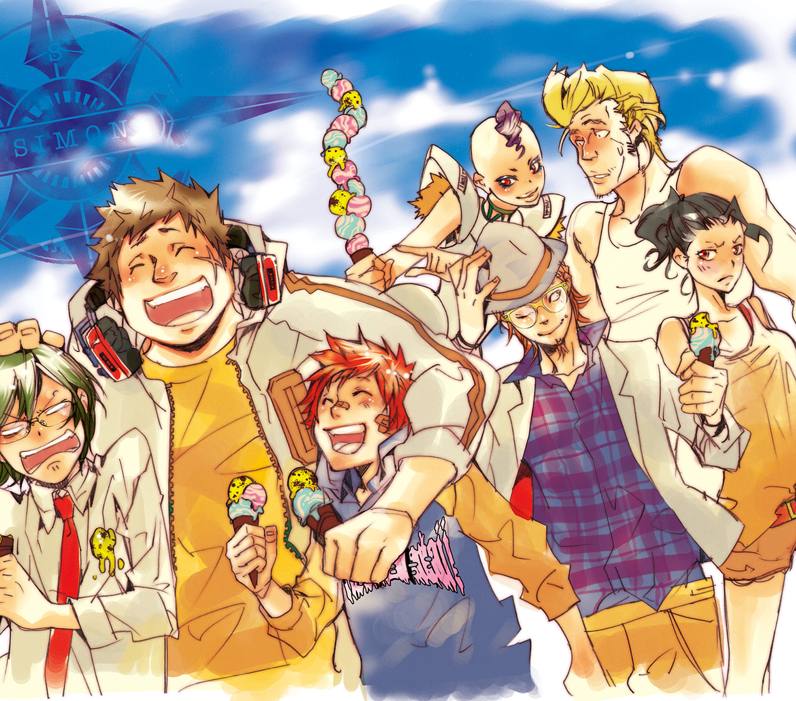

| 家庭教師ヒットマンREBORN! 隠し弾 5 シモンクッキング！ | |
| 天野明 & 子安秀明 | |
この本は縦書きでレイアウトされています。
また、ご覧になる機種により、表示の差が認められることがあります。

この作品はフィクションです。
実在の人物・団体・事件などにはいっさい関係ありません。
緑たなびく並盛の♪
大なく小なく並が・いい♪
校歌の歌詞にもある通り、ここ並盛町の並盛中学校は、特別変わったところのない極めて平凡な中学校だ。
これは――そんな平凡な世界をとりまく、平凡なマフィアたちの、平凡な日常を切り取った物語である。
......たぶん。
並盛中を震撼させた『黒曜中襲撃事件』が終わって半月後――
ガッ！
二メートルを超える大男が、白目をむいて地面に倒れた。
校庭にひしめく屈強な男たちの間に、ざわめきが走る。
彼らは恐怖していた。百人を超える数でたった一人の――自分たちよりはるかに小柄で細身な少年を取り囲んでいるというのに。
「お......おりぁぁぁぁっ！」
緊張に耐え切れないというように、男の一人が少年にむかって飛びかかった。
手にした木刀が、少年の頭を目がけて振り下ろされる。
当たれば骨さえ砕く必殺の一撃。
しかし、
「!?」
少年は、避けなかった。腕を上げることすらしなかった。
「バ......バカな......」
自分の頭より高く上げた細い脚。その靴の裏で、少年は木刀を受け止めていた。
信じられない光景に動揺しながらも、男は必死になって木刀を持った腕に力をこめた。力こぶがふくれあがり、体格ではるかにおとる少年に男の全体重がのしかかる。
少年は、ピクリともゆらがなかった。
片脚を上げているという恐ろしく不安定な体勢にもかかわらず。
「......フン」
少年が、つまらなそうに鼻をならした。
次の瞬間、
ガッ！
身体をひねると同時に、少年の手にしたトンファーがくり出された。金属の棒は正確に相手のあごを打ち砕き、先ほどの大男と同じように一瞬でその意識を奪い去った。
少年を囲む男たちの間に、さらなる緊張と戦慄が広がっていく。
限界にまでふくれあがったそれがはじけるまで、大した時間はかからなかった。
おおおおおおおおおおおおオオオオオオオオオオオオオオオオオオッ！
ヤケになって声を張り上げ、一斉に少年へ群がる男たち。
それを見て少年は、
「ワオ」
すこしだけ、笑った。
「来なよ」
両手にトンファーを構え、彼――雲雀恭弥は迫り来る屈強な男たちに言い放った。
「群れるやつらは咬み殺すから」
× × ×
「......始まっちまったな」
「あー、そーだな」
校庭でくり広げられる一対百の壮絶なバトル。
それを、離れた植えこみの陰から見ている二人の少年がいた。
「こりゃ、助っ人はいらねーカンジかな」
すこし気おされた表情で、ポリポリと頭をかく山本武。
視線の先......校庭での戦いは、たった一人の雲雀が百人の男たちを圧倒していた。
嵐のように降り注ぐパンチ、キック、凶器による攻撃は、雲雀の身体をかすめることすらなかった。
反対に、雲雀の攻撃は常にたった一撃で相手をしずめていく。
絶望的にも思われた人数の差が、急速に意味をなくす。
それは、象が蟻を踏みつぶすのにも似た一方的な〝殲滅〟だった。
並盛中の風紀委員長にして、最強の不良。雲雀恭弥の力の限界を知る者は、まだどこにも存在しない。
「ったく、たかがヒバリ相手に、なさけねーやつらだぜ」
そう言っていきがる獄寺隼人だったが、青ざめる表情まではごまかせない。
「で、てめーはこんなとこで何してんだよ、山本？」
「ん？ いや、昔、ヒバリにやられたやつらが、用心棒雇ってリベンジしに来たって聞いたんだよ。黒曜とのバトルで弱ってるいまがチャンスだからって」
「それが、どーしたっつーんだよ」
「だから、ピンチになったら助太刀してやろーと思って」
「ケッ。ンなことしてやる必要ねーっつーんだよ」
「だよな。やっぱ、ヒバリは強ぇーわ」
「そーゆーことじゃねえよ！ あのヤローは、さんざんオレたちとやりあってきただろーが！ しかも、10代目にまで何度も手ェ出してんだぞ！」
10代目......並盛中の平凡な生徒にして、巨大マフィア・ボンゴレファミリーの次期ボス候補。そのツナこと沢田綱吉に右腕として仕える獄寺にとってみれば、彼に従わないどころか、たびたび敵対行動をとってくる雲雀を気に入るわけがない。
「んー、でも、同じ学校の仲間だしなー」
「仲間じゃねーよ、あんなやつ！」
もう話につきあうのもバカらしいというように、獄寺はそっぽをむく。
「ところで、獄寺」
「んだよ？」
「おまえのほうは何でここにいるんだ？」
「あ......」
山本の問いかけに、ハッとなる獄寺。
「やべーやべー、忘れてたぜ」
「？」
「オレはてめーみてぇなお人よしとは違うからな。ヒバリのヤローを、オレの〝作戦〟のために利用させてもらうぜ」
「作戦......？」
そのときだ。
「どこだぁっ！ タコヘッドぉぉぉ！」
遠くから、ムダに気合の入った大声が響いてきた。
「あれ？ あそこにいるのって......」
山本が、校舎の屋上を指さす。
そこには声を張り上げる一人の少年の姿があった。
短く刈りこまれた芝生のような髪に、意志の強そうなつりあがった眉。そして、いつも鼻につけているバンソウコウを、見間違えるはずもない。
「今日こそは逃がさんぞ、タコヘッド！ おまえに必ず『うん』と言わせるからな！」
屋上から声を張り上げる笹川了平を、山本はきょとんとして見上げる。
「あれって......」
「あー、そーだよ」
獄寺はうんざりした顔になり、
「ったく、最近またしつこくなりやがって。なにが『ボクシング部に入れ』だよ」
ボクシング部の部長である了平が、素質のある人間を見ると誰でも入部させたがるというのは有名な話だ。そんな彼が、黒曜襲撃事件で活躍した獄寺を、放っておくわけがなかった。
「試合が近ぇからとか、ンなことオレが知るかっつーの」
「いいんじゃね、入ってみれば。おまえ、何も部活に入ってないんだしさ」
「アホか。マフィアが部活なんて......」
「たしか、ツナも誘われてるんだろ。だったら、ツナと一緒にさ」
「10代目と一緒......って、冗談じゃねーよ！ 芝生頭のクラブに入るってことは、あのヤローの下になるってことだろーが！ ンなこと、10代目にさせられっか！」
「ふーん」
「つか、それはどーでもいーんだよ！」
強引に話を切り上げ、獄寺はニッと笑ってみせる。
「さっきも言ったろ。オレには作戦があるって。あのボクシングバカのウゼー追っかけを止める方法がな」
そう言った獄寺は、突然隠れていた茂みから立ち上がり、
「こっちを見やがれ芝生頭――――っ！」
獄寺の声に、すかさず反応する了平。
しかし、了平に見つかる前に、獄寺はすぐさま再び茂みに隠れる。
「いるのか、タコヘッド!? いま行くから動くんじゃないぞ！」
律儀に前置きしてから、了平は校舎の中にもどっていった。
「あれ？ やっぱ、獄寺、ボクシング部に入りてーの？」
「ンなわけあっかよ。やつをここに呼ぶのはヒバリに会わせるためだっつーの」
それから獄寺が語った〝作戦〟とは、つまりこういうことだった。
１．戦う雲雀を、了平に見せる。
２．強いやつなら誰でも勧誘したがる了平は、反射的に雲雀をスカウトしようとする。
３．獄寺のことは、とりあえず忘れる。
「......ってわけだ」
「ま、作戦つーか、思いつきだな」
「う......」
図星をつかれ、言葉につまる獄寺。
「いっ、いいんだよ何だって！ あのボクシングバカが、オレの前から消えればな！」
「うーん......でも、それって無理だぜ」
「え？」
それはどういう......？ 獄寺が聞こうとしたそのとき、
「タコヘッド！」
「っ!?」
不意に近くで大声を出され、獄寺は茂みから飛び上がった。
「し、芝生頭!?」
そこには、全速力で走ってきた了平が、汗を光らせ立っていた。
「てめー、なんでオレが隠れてる場所が......」
「フン。ボクサーの動体視力をなめるなよ、タコヘッド」
そう言って、ジリジリと獄寺に近づいていく了平。
獄寺は後ずさりしながらも、あわてて校庭のほうを指さし、
「お、おいっ！ あれ見ろよ、あれ！」
「ん？」
素直に獄寺の指さしたほうを見る了平。
そこでは、雲雀と男たちの戦いが終局を迎えようとしていた。
半数以上の猛者は、すでに地面に倒れ伏している。返り血を浴びて凄絶な笑みを見せる雲雀を前に、残っている者たちもほとんどが逃げ腰だった。
その光景を見た了平は、
「おお、ヒバリか！ 極限に燃える男の決闘をしているではないか」
「だろ！ だから、あいつのほうが......」
「さて、それは置いといて」
「は？」
「我がボクシング部に入れ、タコヘッドぉ―――――――っ！」
「って、なんでそーなるんだよ――っ！」
迫り来る了平から、再び逃げだす獄寺。彼の考えた作戦は、完全にあてがはずれてしまったようだった。
「だから言ったのにさ」
遠ざかっていく獄寺たちを見送りながら、山本はそうつぶやく。
チラリと視線を移すと、校庭の戦いはすでに終了していた。
力つきた男たちの中心に、ただ一人立っている雲雀。あらためてその実力を目の当たりにし、山本の身体に軽く震えが走る。
これほどの強者でありながら、なぜ了平は彼をボクシングに誘おうとしないのか――
山本は、そのきっかけとなった事件を、野球部の先輩から聞いていた。
それは――
山本たちの入学前にまでさかのぼる。
『並盛中ニュース ５月号
ボクシング部、交流試合の日迫る！
期待の新人の参戦も!?
不良生徒が多くいたことで、評判の悪かった並盛中ボクシング部。廃部の話も持ち上がっていたが、以前からお伝えしている通り、部長になった笹川了平くんのがんばりで、いまでは真面目に活動するクラブへと生まれ変わりつつある。
来月には、ヒスイ中ボクシング部との交流試合も予定されている。これまではなかなか他校も相手をしてくれなかったのだが、最近の変化もあって今回二年ぶりに試合が行われることとなった。
この交流試合が、ボクシング部の復活を広く知らしめることになるのは間違いなく、笹川くんもいままで以上にはりきって部活動を――――』
× × ×
「雲雀恭弥ぁぁぁ――――――――っ！」
放課後の渡り廊下に、無意味なまでに大きな声がこだました。
「............」
襟の高い学ランを着たゴツい男子の足が、ピタリと止まった。
その口から、重いため息がもれる。
「またか......」
彼の両脇には、同じような制服を着た男たちが並んでいた。殺気をともなって振り返る二人を、男子は腕を上げて制する。
そして彼はかすかにつかれたような表情で、自分を呼び止めた人物......笹川了平へと歩みよっていった。
「しつこいな、あんたも」
頭一つ高いところから、中学生とは思えない静かな威圧感をこめて見下ろす男子。
しかし、了平はひるまないどころか、逆にうれしそうに目を輝かせ、
「いいではないか、その極限に男らしい顔つき。それでこそ、我がボクシング部の一員としてふさわしい！」
「あのな......あんたにまず言っておきたいことが......」
「言いたいことがあるなら、いつでも聞くぞヒバリ！ 我がボクシング部の仲間となってからな！」
「..................」
彼の口から、再びため息がこぼれる。
それを見た了平は、ハッとなり、
「おまえ......ひょっとして......」
「やっと、わかってくれたか」
「何か困っていることがあるのか！ ならば、オレに話してみろ！ ボクシング部員となってくれれば、オレができることなら何でもやって......」
「いいかげんにしてくれ！」
思わず声を張り上げてしまったあと、彼はしまったというように顔を手で覆う。
校内の平穏を乱してはならない。それは、並盛中を守る風紀委員として絶対の法律だ。
自分を落ちつかせるため軽く深呼吸したあと、彼は了平を静かににらむ。
「ここじゃ人目があるんで、ちょっと来てもらえるかい？」
「フフ......そうだな」
了平が、うれしそうにパン！ と拳を手のひらに打ちつける。
「男と男がわかりあうには、正面からぶつかりあうのが一番だ」
× × ×
並盛中の屋上には、その日もおだやかな風が流れていた。
風の中、かすかにまぎれる寝息。
スゥ、スゥ、と規則的に聞こえるそれは、空にのんびり浮かぶ雲とともに、平穏な一つの世界を作り上げていた。
と――
「............」
ピタリ。寝息が止まる。
屋上の扉が開いたのは、その直後だった。
「フフ......やるではないか」
救急箱を手に、よろよろとした足取りでやってきたのは了平だった。全身傷だらけという状態ながら、彼の口もとにはうれしそうな笑みが浮かんでいた。
「さすがはウワサに聞くヒバリだ。このオレと互角以上に戦うあの実力があれば、必ず優秀なボクシング部員に......」
大きすぎる独り言を口にしていた了平だったが、
「おっ」
屋上に先客がいることに気づき、ハッと表情を引き締める。
両手を頭の下に置き、足を組んで床にあおむけに寝転がっていたのは、線の細い黒髪の少年だった。
先ほどまで了平が校舎裏で拳を交えていた『ヒバリ』とは違い、男らしい剛毅さとはほど遠い上品な容姿。身長は、了平と同じくらいだが、ずっとスマートな印象。
高貴な血を引く上流社会の住人......いやそんな世界をも超越した空気をまとった人物だ。
しかし、自他ともに認める〝ボクシングバカ〟な了平に、そんな微妙な雰囲気などわかるはずもない。
彼は普通の生徒に語りかけるような調子で、
「すまない、昼寝の邪魔をしてしまったか」
「............」
少年が身体を起こす。
無言のまま、冷たい目で見つめるも、了平はその抗議の視線に気づかず、
「すこし邪魔をさせてもらうぞ。ケガの手当てをしたいのでな。保健室で説明するには、ちょっと面倒な傷なのだ」
「............」
「ところで、おまえは、なぜこんなところに一人でいるのだ？」
「............」
沈黙を続ける少年。
と、了平が何かに気づいたという顔で、
「まさか、友人関係で悩んでいるのか？ それで、こんなところに一人で？」
「..................」
「困っていることがあるなら、オレに言ってくれ！ ボクシング部のこの笹川了平に！ オレはいつでも待っているぞ！」
「..................」
「いや、待っているだけではダメだ！ 自分から行動しなくてはな！ いま、おまえと友達になってくれそうな者をここに呼んでくるぞ！ うおおおおおおおおっ！」
気合の雄たけびをあげると、了平はたったいま入ってきたドアから再び校舎の中にもどっていった。
「........................」
無言のまま立ちつくす少年。
いつの間に握られていたのだろう。その両手には、一対のトンファーがあった。
あのまま了平が話を続けていたら、おそらく彼は手にしたその凶器で――
「............フゥ」
どこか物足りなさそうな息をもらし、彼は得物を手の中でもてあそんだ。
「草壁、どこかな」
× × ×
並盛中・応接室。
「がはっ！」
一八〇センチを超える大きな身体が、苦痛の声とともに床に倒れこんだ。
それは、了平に『ヒバリ』と呼ばれていたあのゴツい男子生徒だった。
その身体のいたるところに、激しい戦いがあったことをうかがわせる傷跡がある。すべて校舎裏で行われた了平相手のタイマン勝負によるものだ。
そんな彼に――黒髪の少年は、容赦ないトンファーの一撃をたたきこんでいた。
「い......委員長......」
よろよろと『ヒバリ』が立ち上がる。何発も受けた了平の拳より、少年の一発のほうがはるかに効いているようだった。
少年は、そんな彼を冷たく見すえ、
「説明してよ」
「はい......」
ダメージでかすかに足を震わせつつも、彼は自分よりはるかに小柄な少年の前にビッと背筋を伸ばして直立した。
「最近、笹川了平という男がしつこくからんできていまして......」
それから彼は、自分と了平との間で起こっていることを、手短に説明した。
「どうも、その男......私を委員長とカン違いしているようなのです」
「............」
黒髪の少年――本物の雲雀恭弥は、大柄な男に背をむけ、応接室の豪華なソファーに腰を下ろした。
「......なるほどね」
そうつぶやく彼の声には、納得とかすかな不快感が入り混じっていた。
大柄な男――風紀副委員長の草壁は、そんな雲雀におそるおそる、
「どうしましょう？ 笹川了平のこと」
「知らない」
あっさりそう言って、雲雀はチラリと草壁のほうを見る。
「っ......！」
屈強な草壁の身体に、震えが走る。雲雀は氷より冷たい目で、
「弱虫には興味ないから」
「............」
草壁は何も言えなかった。
恐怖で、一瞬にして口中が乾き切っていた。
弱虫には興味がない......その言葉は了平だけでなく草壁にも――
「......わかりました」
なんとか声をしぼり出し、草壁は雲雀にむかって深々と頭を下げた。
雲雀恭弥――
あまり表に出ることのない彼が、いつからこの並盛中で風紀委員長を務めているのか、くわしく知る者はほとんどいない。
しかし、すでにこのときから、彼の名は恐怖とともに生徒たちに刻みこまれていた。
× × ×
「というわけなのだ、京子！」
「へぇー、すごいねー」
大げさに身振り手振りを交える了平の話を、笹川京子は楽しそうに聞いていた。
夕闇が近づき、家路を急ぐ者や買い物客でにぎわう商店街。
下校中にたまたま出会った中学生の兄と小学生の妹は、そのまま一緒に家路をたどっていた。
「オレの右ストレートがこのように放たれた瞬間、ヒバリもまた左パンチをくり出し、それがこのように重なって、つまりはクロスカウンターという形に......」
両腕をまるでタコのようにからみあわせる兄を見て、京子は思わず声をあげて笑ってしまう。
「むっ......何がおかしいのだ、京子」
「ううん、おかしいんじゃないの。あっ、でも、ちょっとおかしかったかな」
京子はそう言って、かわいらしく微笑んでみせる。
「うれしいんだ。お兄ちゃん、中学校で楽しくしてるみたいだから。私、なんだかホッとしちゃった」
「コラ、京子」
くしゃくしゃっと京子の髪をかきまぜる了平。
「兄の心配をする妹がどこにいる」
「うん......」
うなずく京子。と、その丸い目が、かすかに悲しそうに伏せられる。
まだ二人とも小学生だったとき――
中学生の不良集団によって、了平が重傷を負わされるという事件があった。
そのときの傷跡は、いまも了平の額に残っている。
「お兄ちゃん！」
不意に大きな声を出し、了平を見上げる京子。
「ケンカは......ダメだからね」
「う」
思わず言葉につまる了平だったが、京子の真剣な表情に気づくとあわてて、
「あ、当たり前ではないか！ オレはケンカなどしていない！ オレはボクシングに極限の自分をかけると決めたのだ。だから......」
校舎裏での『ヒバリ』との決闘。
あれはケンカではないと、了平は心の中で自分に言い聞かせる。
京子にはボクシング部の練習という風に説明していた。入部させるための行為だったのだから、部活動と言えないこともないはずだ。たぶん。
「でも、よかったね」
「ん？」
不意に話題が変わり、現実にもどってくる了平。
京子は、再び輝くような笑顔を見せ、
「お友達になれたんでしょ。そのヒバリさんっていう人と」
「友達......？」
意表をつかれ、了平は足を止める。
「でしょ」
「..................」
すこし考えて了平は、
「そうだな」
グッと確信をこめてうなずく。
一対一で拳を交えた男同士。これを友と言わずに何と言おうか。
「おまえの言う通りだ、京子！ オレとヒバリは〝極限〟と書いて〝とも〟と呼ぶ拳友同士なのだ――――――っ！」
商店街の真ん中で雄々しく吠え、了平は空にむかって拳をつき上げた。
そんな――
熱い思いをよせる『ヒバリ』が、実はまったくの別人だということに、彼はまだ気づいていない。
× × ×
『並盛中ニュース ６月号
風紀委員、校則の取り締まりを強化！
並盛中に広がっていく見えない反感？
このところ、風紀委員による校内での取り締まりが目立つようになっている。夏でも変わらない学ラン姿は、それだけで一般生徒を恐怖させるのに十分だ。
しかし、あまりに高圧的な風紀活動には反発も大きく、近々、風紀委員を敵視する不良生徒たちが、動きを見せるというウワサも――』
（※この号は、後日、風紀委員の検閲を受け修正されている）
× × ×
「おお、おまえか」
並盛中・屋上。
ここ一か月で六度目となる『ヒバリ』との〝男の決闘〟を終え、いつものようにこっそり傷を手当てするためやって来た了平。
そこにいたのは、以前一度だけ言葉をかわしたことのある黒髪の少年だった。
「久しぶりだな。元気に......」
そう言いかけた了平の目が、ハッと見開かれる。
「ス、スマン！ 元気なわけがないな」
「..................」
少年――雲雀恭弥は横になっていた身体を起こすと、無言で了平を見た。
そんな冷たい視線に今日も気づかず、了平は一人ブツブツと、
「また屋上に一人でいるということは、例の問題は解決していないのだな」
「..................」
「あれから、おまえに会えず心配していたのだ。ボクシング部にも来てくれんし」
「..................」
雲雀の口から、ため息がもれた。
「そのように落ちこむな。よし、元気が出るよう、極限に燃える男の話をしてやろう。オレとヒバリの熱い激闘のストーリーをな」
ピタリ。
懐からトンファーを取り出そうとしていた雲雀の動きが止まる。
「オレは感じているのだ。拳を交えるたびに、二人の友情が深まっていくのを」
「へぇ......」
かすかな笑みを見せる雲雀。それに気をよくした了平は、
「このままいけば、近くヒバリは必ず仲間となってくれるだろう。今度の試合にも、ギリギリ間に合いそうだ。だから......」
さらに話が盛り上がる気配を見せたところで、不意に雲雀が立ち上がった。
「おい、どこへ行くのだ？ まだオレとヒバリの戦いを......」
何も答えることなく、雲雀は屋上から去っていった。
「むぅ......話の途中だというのに」
不満そうに口をとがらせる了平。
しかし、すぐ笑顔になり、
「なるほど！ オレの話で早くも元気が出たのだな！ よかった、よかった！」
うれしい気持ちをかみしめるように、その場でボクシングのジャブを始める。と、
「......つッ」
了平の顔が、かすかにゆがむ。
よく考えたら、彼はケガの治療をするため屋上に来たのだった。
救急箱を取り出し、一人慣れた手つきで消毒をしながら、了平はあらためて思う。
校舎裏の決闘によって『ヒバリ』から受けた傷に、重傷といえるものはまったくない。ボクシング部に入れたいという理由があるから、了平が『ヒバリ』を本気でたたきのめすことはなかったが、むこうにしてみればそんなことは関係がない。
にもかかわらず、単なる〝暴力〟ではなく、こうして互いの力を確かめあうような〝男の決闘〟をしてくれるということは――
「やはり、あいつは〝男〟なのだ。ますます我がボクシング部に......」
そのときだった。
不意に近づいてくる大量の足音。
屋上の扉が乱暴に開け放たれ、険しい顔をした男たちが一斉になだれこんできた。
「なんだ、おまえたちは？」
おどろく了平と男たちの間で、しばらく言葉がかわされた。
そして――
× × ×
翌日。
応接間のソファーにもたれて眠っていた雲雀は、ノックの音で目を覚ました。
「失礼します」
部屋に入ってきたのは、顔の一部が大きくはれあがった草壁だった。
昨日、了平と別れた雲雀は、まっすぐに草壁のところへむかった。そして、いまもくっきり跡の残る〝制裁〟を加えていた。
「片付いた？ あの男のこと」
「..................」
「弱虫は好きじゃない。って何度も言わせないでよ」
「..................」
「いつまで、あんな男と遊んでるの？ 彼はこう言ったんだよ。ヒバリはボクシング部の仲間になるって」
「そ、そのことについては......」
あわてて口を開く草壁だったが、雲雀の前で見苦しい姿を見せまいと、必死に自分を落ちつかせる。
「そのことについては、笹川了平が人の話を聞かない男というか......自分は、何度も『委員長ではない』と言ったのですが」
「ふーん」
「それに、笹川がボクシング部の優秀な選手であることは間違いありません。彼を本気でつぶしてしまっては、ボクシング部、ひいては並盛中のために......」
「逆らうの？」
たった一言。それだけで、草壁は指の一本さえ動かせなくなる。
「僕の言うことが聞けないの？」
「..................」
沈黙のあと、草壁は重いものを吐き出すようにして口を開いた。
「必要がないのです」
けげんそうに眉をひそめる雲雀。
「必要がない？」
「はい......」
「笹川了平は重傷を負わされ、並盛中央病院に入院しています」
× × ×
並盛中央病院の一室。
ベッドに横たわった了平と、そばの椅子に座る京子は、長い沈黙を続けていた。
かわいらしい顔で、キュッと厳しい表情を見せる京子。了平は、そんな京子の視線を避けるように窓のほうをむいていた。
やがて、
「お兄......ちゃん」
京子の険しい表情が崩れる。堰が切れたように悲しみが広がっていき、目じりに大粒の涙がふくらむ。
「なんで、こんなことになっちゃったの？」
「そ、それは......」
了平は、あたふたと口を開く。
「だから何度も言ったように、昼寝をしたら全身をはげしく寝違えて......」
「試合......もうすぐなのに」
その一言に、了平の息が止まる。
「お兄ちゃん、すごくがんばってたのに......なのに......」
了平はもう何も言えなかった。
「......っ」
京子は耐えられないというように顔を押さえ、足早に病室から出ていった。
「スマン......京子」
しぼり出すように苦しげな声がもれる。
妹を泣かせてしまった......そのことが悔しくて情けなくて、了平はたまらなかった。
昨日――
屋上に現れた男たちは「ヒバリをシメるために来た」と言った。
彼らがなぜヒバリを敵視するのか、了平は知らない。しかし、五十人を超える数で、たった一人を倒そうという卑劣な行為を見逃せるわけがなかった。
何より、ヒバリは了平の――
「友......だからな」
了平は自分の拳をじっと見つめ、こみあげる嗚咽をかみ殺した。
了平がボクシング部に入って初めての試合は、明日に迫っていた。
× × ×
「これで全員か」
「押忍、副委員長！」
部下である哀川の返事を受け、草壁はあたりをぐるりと見回した。
並盛町郊外にある廃工場。風紀委員に敵対する不良たちは、人目につかないこの場所をたまり場にしていた。
コンクリの床の上でうめいているのは、すべて草壁ひきいる風紀委員によって倒された不良たち。しかしその数は、これまでの調査でつかんでいた数よりずっと少ない。
聞けば、一昨日、主力の大半が倒されてしまったとのことだった。
「笹川了平か......」
その名をつぶやく草壁の表情が、わずかに暗くなる。
「今日が......試合だったな」
ボクシング部にとって久々となる――大切な交流試合。
そこにかける了平の意気ごみが並々ならないことを、草壁は知っていた。草壁と互角に戦える了平なら、試合を通じて並盛中ボクシング部の名を存分に高めてくれただろう。
しかし、
「..................」
もっと早く不良たちのアジトをつきとめていたら――
もっと早く風紀委員の総力をあげて敵対勢力をつぶしていたら――
いまさらどうしようもないそれらの可能性を、草壁は頭の中から振り払う。
そして、並盛中で待っている雲雀に掃討終了の報告をするため、部下たちを置いて一人大通りへと出た。
「な......！」
草壁は、そこで信じられないものを見た。
ここにいるはずのない男だった。たった数日前に、五十人の不良を一人で相手にして重傷を負った――
「笹川了平！」
× × ×
強くなりたかった。
始まりは、自分が負けることで妹を泣かせたくないという思い。
でもいつの間にか、了平は心の底からボクシングを愛するようになっていた。
自分をたくましい男に育ててくれたボクシング。努力する喜びを教え、かけがえのない仲間をくれたボクシング。
了平は、そんなボクシングを裏切りたくなかった。
だから――
「笹川了平！」
名前を呼ばれ、了平はおどろいて振り返る。
その瞬間、身体を支えていた杖が道路をすべった。
そのまま倒れこみそうになった了平を、ギリギリのところで太い腕がかかえこむ。
「ヒバリ......」
了平は、いまだに雲雀だとカン違いしている草壁にむかって、微笑んでみせた。
「何をしているのだ......こんなところで」
「それはこちらのセリフだ！」
風紀副委員長として常に冷静を心がけている草壁が、つい声を張り上げてしまう。
了平の身体はボロボロだった。身体中に包帯が巻かれ、消毒薬のきついにおいがただよい、いつもあふれていたパワーがまるで感じられない。
何度もぶつかりあった男の身体が自分の腕の中であまりに弱々しく見え、草壁の胸につらいとも悲しいともいえない思いがこみあげてくる。
「病院にもどるぞ。まともに歩くこともできないそんな身体で一体......」
「おい、そっちではないぞ、ヒバリ」
「なに？」
「試合が行われるヒスイ中は、むこうではないか」
草壁は、今度こそ本当に言葉をなくした。
その脳裏に、あり得るはずのない可能性がくっきりと浮かび上がる。絶対にないと自分に言い聞かせながらも、草壁は了平に問いただす。
「......どういうつもりだ？」
「決まっているだろう。主将であるオレが試合に出ずに......」
「馬鹿を言うな！」
再び声を張り上げる草壁。
「その身体で戦えるはずがない！ それくらい貴様にも......」
「何をおかしなことを言っている」
静かな目で草壁を見る了平。
そこには、どんな困難にぶつかっても消えない――太陽のような炎が燃えていた。
「オレは戦う。それだけだ」
了平は再び一人で歩き始めた。
しかし、我に返った草壁が、あわててその身体を抱き止める。
「なぜだ！ ボクシング部には、貴様の他にも部員がいるだろう！」
「認めるのは悔しいが、我が部員たちはまだまだ未熟だ。強豪のヒスイ中相手では、おそらく一勝もできん」
「しかし、ただの練習試合で......」
「『ただの』だと！」
いきなり激昂した了平が草壁につかみかかろうとしたが、すぐに苦しそうに顔をゆがめてひざをついた。
「......これにかかっているのだ」
すがるような目で、草壁を見上げる了平。
「練習試合とはいえ、無様な姿をさらしてしまえば、並盛中ボクシング部の評判は再び地に落ちる。そうなれば、また長い間試合ができなくなるかもしれない」
草壁は、あらためてボクシング部にかける了平の思いの強さを知る。そして、なぜしつこく『ヒバリ』を部に入れようとしたのかも。
「おまえが......いてくれたらな」
「..................」
草壁は苦しそうに目をそらす。
了平の気持ちがわからないわけではない。しかし、自分は風紀の副委員長だ。雲雀を裏切ることはできない。
でも――
「っ......！」
長い沈黙のあと、草壁は意を決したように了平の身体をかかえあげた。
「やめろ！ オレは試合に......」
「わかっている」
草壁はゆるぎない声で言った。
「行くぞ......試合会場にな」
× × ×
草壁は、自分がなぜこんなことをしているのかわからなかった。
風紀委員のナンバー２として、いつまでも雲雀のことを支え続ける。それだけが自分の役割と、そう決めていたはずだった。
なのに、いま彼は――
「ついたぞ」
ヒスイ中体育館の前に立つ草壁。
満身創痍の了平をかかえてきたことで、さすがの彼も息が乱れていた。
「すまぬ、ヒバリ。部員でもないおまえにここまでしてもらって」
「..................」
草壁は、いつ言おうか迷っていた。
自分をボクシング部員にしてほしい。そして今日の試合に出してほしいと。
雲雀は、風紀との兼任は認めないだろう。それでも草壁は、ボロボロになってまでボクシング部のためにつくす了平を、見捨てることができなかった。
（すみません......委員長）
心の中で雲雀に頭を下げたあと、ついに草壁は了平にむかって――
「お兄ちゃん！」
不意に届いた少女の声。
おどろいた顔で駆けよってきたのは、了平の妹の京子だった。
「どうして、ここにいるの？」
「そ、それは......」
「病院は？ ねぇ、お兄ちゃん！」
「聞いてくれ、京子。オレはどうしても今日の試合に......」
「試合なら、雲雀さんが出てくれてるよ」
同時に硬直する了平と草壁。
「雲雀さんなら、助けてくれると思ったの。だって、お兄ちゃんのお友達だから」
「..................」
「中学校に一人で行くのって、すごくこわかったけど......でも、偶然、すぐに雲雀さんと会えて......」
「ま、待て、京子」
了平がやっと声をしぼりだす。
「何を言っているのだ？ ヒバリならここにいるではないか」
「え？」
きょとんとなって草壁を見る京子。
その直後、
「おい、ヒバリっ！」
草壁は了平をその場に残し、全速力で体育館へと駆けこんでいった。
× × ×
「委員長！」
信じられないものを見た。
病院から抜け出した了平を見たときのおどろきなど、比べものにならない。
――いた。
決して見間違えることのない......黒い学ランをまとった少年が、リングの上に。
あまりに異質な、それはまるで異世界から来た黒い妖精のようですらあった。
他の者たちも草壁と同じ思いにとらわれているようで、誰もがまともに口を開けず、リングの上にいる雲雀に見入っている。
「どうしたの？」
誰にともなく雲雀が口を開く。
「来ないの？ これ試合でしょ」
答えられる者はもちろん、まともに声を出せる者さえいなかった。
そのとき、
「友達のいない黒髪ではないか！」
草壁の金縛りがとける。
振りむくと、そこには必死になってリングに近づいてくる了平の姿があった。
雲雀が了平を見る。
すずやかな雲雀の視線と、困惑する了平の視線が交錯する。
「なぜここにいる......？」
雲雀は、しばらく何も言わなかった。
反応を楽しむように、おだやかな微笑を浮かべたまま了平を見つめる。
そして、
「キミ、言ったんだってね」
「な、何をだ？」
「ボクシング部員になれば、自分のできることは何でもする......そこの草壁に、そう言ったんだよね」
「くさかべ......？」
了平の混乱に拍車がかかる。
かまわず、雲雀は言葉を続け、
「いいよ。ボクシング部に入っても」
「それはまことか！」
了平の顔が、喜びにあふれる。
ボクシング部に入る。その一言だけで、疑問や困惑などすべて吹き飛んでいた。
「ただし......」
「この試合が終わったら、僕はボクシング部をやめる」
笑顔のまま、了平は固まった。
「そして、キミは二度と雲雀恭弥をボクシング部に入れようとしない」
雲雀は、悠然と了平を見つめ、
「言ったんだよね。できることはなんでもするって」
「........................」
何も言い返せない了平。
たまらず声をあげたのは、草壁だった。
「委員長！ それではあまりにも......」
スッ――
草壁を制するように、了平が手を上げた。
あらためて、まっすぐにリングの上の雲雀を見つめ、
「わかった」
ただ一言。
それが静かな衝撃となって周囲に広がっていく前に、雲雀は了平に背をむけた。
話は終わり、やることは一つ。
「さぁ......始めようか」
拳が構えられた瞬間、細い身体に刃物のような殺気が満ちていく。
そして――
ヒスイ中ボクシング部は、創部以来、最大の恐怖を刻まれることになった。
「......ってわけなんだよ」
「なるほどな」
追ってくる了平をかろうじてまいた獄寺は、山本から雲雀と了平の過去を聞いて、納得したようにうなずいた。
「やっぱ芝生頭はバカだぜ。あっさりヒバリにハメられやがってよ」
「ハメられたってのとは違う気がするけど」
「ん？ 待てよ。その手って使えねーか」
ふと気づいたように獄寺がそうつぶやいた瞬間、
「こんなところにいたか、タコヘッド！」
「うわっ！」
いきなり首根っこをつかまれ、獄寺は隠れていた茂みからつまみ出された。
「て、てめー、芝生頭！ 今日はしつこすぎるっつーんだよ！」
「フン。おまえのように何もせずフラフラしている者は、我がボクシング部に入るしか道はないのだ」
「誰がてめーのクラブになんか......」
そう言いかけて、獄寺はハッと言葉をのみこむ。
そして、口もとを引きつらせながらも、なんとか従順そうな顔を作り、
「......いっ、いいぜ、入ってやっても」
獄寺がそう言った瞬間、了平はこぼれるような笑顔を見せる。
「やっとオレのこの思いをわかってくれたか！ やはり、ボクシングには男をひきつけてやまない極限のロマンが......」
暑苦しい言葉の大放出が始まり、獄寺は必死になって吐き気を抑える。
がまんだ。これは作戦だ。
雲雀のときと同じように、了平に『言うことを聞く』と約束させれば――
「おい、芝生頭......ボクシング部に入ってやる代わりに......」
「行くぞ、タコヘッド」
グイ。獄寺の話などかけらも聞く様子を見せず、その手を引っ張る了平。
「さっそく練習を始めるぞ。まずは軽いウォーミングアップからだな」
「お、おい......オレの話......」
「軽く校庭百周のあとは、軽く一時間ストレッチを行い、続いて軽く腕立て腹筋スクワット背筋に反復横とびと......」
「全然軽くねーだろーがぁ！ つか、オレの話聞けよぉ！ お――――いっ！」
叫びながら、ズルズルと了平に引きずられていく獄寺。
作戦は、またも失敗に終わりそうだった。
× × ×
並盛中・屋上。
百人の男を返り討ちにした雲雀は、何事もなかったように、のんびりと昼寝の時間を楽しんでいた。
スゥ、スゥ......寝息とともにおだやかに風が流れていく。
並盛中は、今日も平和だった。
それは、まだ『黒曜中』『ヴァリアー』『ミルフィオーレ』といった強大な敵が現れる前の――
平和だった並盛町で起こった事件。
《カウントダウン――――スタート》
「ちょっとお話があります」
「オレにはねえ」
並盛公園。
木漏れ日のさすベンチの前で、険悪な表情の少女と少年がむかいあっていた。
「なっ、なんで、いつもそんな風にイジワルなこと言うんですか！ 信じられないです、アンビリバボーです！」
「うっせー、それ以上しゃべんな。アホ女のアホが伝染する」
「な......っ」
絶句する少女。
しかし、すぐさま拳を怒りに震わせ、
「人をデンジャラスなウイルスみたいに言わないでください！ それに、ハルのどこがアホだってゆーんですか！」
「まず、てめーのいまの格好がアホそのものだろーが」
少年の指摘通りというか――
少女は、なぜか神社にいる神主さんのような格好をして、手にはお祓いに使う紙のヒラヒラがついた棒を持っていた。
ちなみに、彼女の家は神社でも何でもなく、彼女も普通の女子中学生である。
「こっ、これはちっともアホなんかじゃありませんよ！」
ちょっぴり顔を赤くしながら、少女――三浦ハルは少年に抗議した。
「いいですか！ 神主さんが神主さんになるには、ものすごく勉強とか修行とかをしなくちゃいけないんですよ！ さらに陰陽師さんレベルになるには、もっとハードでエキサイティングな......」
「いや、神主がアホとかじゃなくて、いまこの場でその格好してるてめーがアホだっつってんだろーが、アホ女」
「まっ、またアホって言いましたね！ アホ女って言いましたね！」
「あー、うっせーうっせー」
さらにヒートアップするハルを前に、少年――獄寺隼人は、つきあっていられないというように背をむけた。
獄寺は思う。ハルが自分と同じ並盛中の生徒でなくて本当によかったと。彼は、基本的にこういうウザい人間が大嫌いだ。ちなみにハルは、身近にいるウザくて嫌いな人間のトップ２に入っている。
「って、行かないでください獄寺さん！」
立ち去ろうとした獄寺の服を、あわててハルがつかむ。
獄寺はイライラを隠そうともせず、
「いいかげんにしろよ、コラ！ こっちはてめーにかまってるヒマなんか......」
「ツナさんにも......ひょっとしたら関わるかもなんですよ！」
「！」
獄寺の態度が急変した。
「......10代目にだと？」
ゆれる瞳でそうつぶやくと、険しい顔でハルにつめより、
「てめー、そりゃ、どーゆーことだよ！ まだ10代目に何かあるっつーのか!?」
10代目――巨大マフィア・ボンゴレファミリー次期ボス候補のツナこと沢田綱吉は、現在、並盛中央病院に入院していた。キャバッローネファミリーのボス、ディーノにトレーニングにつきあわされ、そこでカメのエンツィオが暴れたことによりケガを負ってしまったのだ。
獄寺はついさっき見舞いをすませてきたところで、ハルが声をかけてきたのは、その帰りのことだった。
「お、落ちついてくださいよっ」
「落ちついてられっか！ 10代目にこれ以上何かあったらオレは......」
獄寺は、ボンゴレの一員として、同い年のツナに絶対の忠誠を誓っていた。
「言え！ オレに何の用だ？」
「は、はひっ......」
ハルは、獄寺から視線をはずし、わずかにうつむきながら口を開いた。
「獄寺さんは、呪われている模様です」
「............」
言葉の意味がすぐにはわからず、無言でしばらく固まってしまう獄寺。
「......のろい？」
「そうです。その呪いです」
どの呪いかわからないが、ハルは獄寺と目をあわせずにうなずいてみせる。
「実はハル、入院したツナさんをはげまそうと思って神主さんになったんです」
目を閉じてギュッと拳を握るハル。
「本物っぽい神主さんになろうって、お祓いとか占いのことも勉強したんです。そしたらわかったんですよ......」
そのまま、さらに深刻そうに声を落とし、
「呪いによる不幸のカウントダウンは、もう始まっています。それをなんとかするためには......獄寺さん！」
ビシッ！
目をカッと見開いて、ハルが人さし指をつきつけたその先に――
すでに獄寺の姿はなかった。
ハルの前から退散して十分後。
獄寺は、一人、並盛商店街を歩いていた。
「ったく、何が呪いだ、あのアホ女......」
イライラの治まらない獄寺は、ずっとハルへの愚痴をこぼしていた。
「オレが呪われてる？ バカかよ、ンなことあるわけ............っ！」
不意に、獄寺の顔がゆがんだ。
力んだ瞬間、全身に走った痛み。
それは、ツナ入院の連絡を受けあわてて駆けつけた獄寺が、途中何度も車にひかれて負ったケガによるものだった。
「痛つつ......こりゃ、早いとこ帰って、手当てしねーとな」
そうつぶやいた獄寺の目が、ハッと見開かれる。
――獄寺さんは、呪われている模様です。
「いや......おい、待て待て」
脳裏によみがえったハルのセリフを、あわてて打ち消す獄寺。
「これは......あれだろ。10代目がケガしたって聞いて、それで信号なんか待ってらんねーってなったから......」
ズッ！
「わっ！」
獄寺の身体がガクッとゆらぐ。
そのまま倒れそうになったところを、なんとかバランスをとって踏みとどまる。
「あ、危ねー......」
足もとを見ると、そこにはつぶれた空き缶が落ちていた。うっかりそれを踏みつけて、転びそうになったのだ。
「ンだよ。これくれー、よくある......」
ズボッ！
「うおっ！」
再び、獄寺の身体が大きくゆらぐ。
何気なく後ずさりしたそこに、何かの工事中らしいちいさな穴が開いていたのだ。
獄寺の右足は、そこに思い切りハマっていた。
「く......っ」
続けざまの思わぬ失態に、獄寺のほおがかすかに熱くなる。
「いやいや......これくれー、よくあるよくあ......」
ズガ――――――ンッ！
「っっっ!!」
鼻先わずか数センチ。
獄寺の目の前に、まるでギロチンのような勢いで金属製の看板が落下した。
「........................」
さすがの獄寺も、顔が青ざめていくのを抑えられない。
あと一歩前に出ていたら、看板は間違いなく獄寺の頭に――
「これくれー......よく......よくあ......」
「って、よくあってたまるか――っ！ てめー、ざけんじゃねーぞーっ！」
商店街に獄寺の怒声がはじけた。
「バ、バカじゃねーの......こんな......呪いなんかのわけねーだろ......あんなアホ女の言うことなんて......」
――ツナさんにも......ひょっとしたら関わるかもなんですよ！
「！」
ハルの言葉が、再び脳裏によみがえる。
「10代目......にも......」
獄寺の声が震える。
自分だけのことなら、ウソと笑ってすますこともできる。仮に何かあっても、自力で乗り越える自信がある。
しかし――
万が一、億が一にも、それがツナに関係してくるとしたら!?
「10代目ぇっ！」
叫ぶなり、獄寺は走りだした。
こうしている間にも、ツナに危険が迫っているかもしれない。そう考えたら、居ても立ってもいられなかった。
再び車に二、三度ひかれながらも、獄寺は驚異的なスピードで、並盛中央病院の前へともどってきた。
そして、ツナのもとへむかうべく建物の中へと――
ドガァァァァァァァァァァァン！
「がはっ！」
突然の爆風が、獄寺を吹き飛ばした。
彼の頭上で爆発したのは、建物の中から飛んできた手榴弾だった。
直撃こそしなかったものの、思いがけないところからの攻撃に、さすがの獄寺も反応が遅れた。
「まさか......ヒットマンがもう病院にいるのか!?」
早く！ 早くツナのもとへ！
獄寺は、気力をふりしぼって立ち上がり――
ドォォォォォォォォォォォォンッ！
「――――――――――っ!!」
閃光と衝撃とニンニク臭が、猛烈な勢いで押しよせてきて――
獄寺は、意識を失った。
「となりとは奇遇っスね、10代目！ あのあと気を失いまして、やっぱオレも入院させられました！ 大丈夫かって？ ええ、このとーり！ それより10代目！ ファミリーの今後について語り合いましょう！ 寝かせませんよーっ」
× × ×
気がついたとき、獄寺はツナと同じ病室に寝かされていた。
彼に心配をかけまいと、無邪気にはしゃいでみせた獄寺だったが、安静にしたいツナが別の部屋に移ったあとは、一転して暗く沈んだ表情を見せていた。
「っくしょー......なんでこんな目に......」
ちなみに獄寺を気絶させた手榴弾やニンニク臭の爆風は、ヒットマンの仕業でなくツナの周りでふざけていたチビたち――ランボとイーピンのしでかしたことだった。
と、そのとき、
「獄寺さんっ！」
うるさい声が耳に響く。顔を上げると、そこには息せき切って病室に駆けこんできたハルの姿があった。
「いつの間にかいなくなっちゃって、すっごく探したんですよ！ そしたら、この病院にいるって......」
と、獄寺を見たハルが息をのむ。
「どうしたんですか、そのケガ!?」
「って、知らなかったのかよ！」
「しっ、知りませんでしたよ......」
急におろおろし始めるハル。獄寺はどうでもいいというように背をむけ、
「さっさと出てけ。てめーに用はねえ」
「よ、用は......用事ならありますよっ！」
ハルが再び勢いをとりもどし、
「呪いです！」
「っ！」
その言葉を聞いた瞬間、どうしようもなく反応してしまう獄寺。
「獄寺さんは、やっぱり呪われちゃってるんです。だから、そんなケガとかもしちゃうんですよ！」
「..................」
獄寺は、反論できなかった。
これまでに起こったことを考えると、本当に呪われているとしか思えない。もともと獄寺は、怪奇現象や超常現象といったものをかなり信じるタイプだ。ちなみに愛読書は、図書館で何度も借りている『海の神、山の神大全』である。
「......おい」
獄寺が重い口を開く。
「その......呪いってゆーのは、どーゆーもんなんだよ？」
「やっと聞いてくれる気になりましたか！」
ホッとしたように顔をほころばせるハル。獄寺は決まり悪そうに髪をかきむしり、
「いーから、とっとと話せよ」
「名前は、ハイパー〝呪〟デストロイ・エディションといって......」
「名前はどーでもいーんだよ！」
「とにかく、今日は獄寺さんにとって最悪にデンジャラスな日なんです！ 星座とか血液型とか姓名判断とか、そーゆーのすべてで呪われちゃってるんです！」
「なにッ!?」
獄寺の顔がさらに引きつる。くり返すが、獄寺は〝信じる〟タイプである。
「獄寺さんの呪いは、とにかく大変な呪いなんです！ 早くなんとかしないと、獄寺さんだけじゃなく周りの人までデンジャラスになっちゃうかも......」
周りの人――そう言われて、獄寺が思い浮かべたのはもちろんツナのことだ。
聞けば、ツナは入院してからもいろいろとアクシデントに見舞われていたらしい。
――自分と同じように。
「おい、アホ女！」
獄寺は、必死の形相でハルにつめより、
「教えろ！ どーすれば、その呪いはなくなるんだよ！」
「そっ、それにはですね......」
ハルは、あせったように目を泳がせ、
「必要なものがありますっ。呪い除けのお人形です」
「人形？」
けげんそうに首をかしげる獄寺。
「それって、どんな人形だよ。日本人形とかフランス人形みてーなやつか？」
「いえいえ、ワラであまれた......」
「ワラ人形かよ！」
逆に呪われそうなものの名が出てきて、さすがに大声をあげる獄寺。
「特別なお人形さんなんですよっ。獄寺さんの不幸を、身代わりにドーンと受け止めてくれるんです！」
「なに......？」
人形や地蔵といった人の形をしたものに身体の悪いところの身代わりになってもらうというのは、日本各地で古くから見られる風習だ。ハルの言うことを否定しそうになっていた獄寺だったが、再び信じようという気持ちが大きくなってくる。
「で、その人形はどこにあるんだよ？」
「とある人が持っています」
「とある人？」
「はい。獄寺さんは、その人にちゃんとお願いして、ちゃんと仲良くなって、それでお人形を貸してもらうのがベストだと......」
「んなことは、どーでもいーんだよ！ 誰が持ってんのかさっさと言え！」
「そ、それはですね......それは......」
「ランボちゃんです」
廊下の窓から、薄れゆく夕日がさしこんでくる。
ハルの言う通りに大変な呪いがかかっているのだとすれば、現在、獄寺は極めて危険な状態にあるといえる。
その解決の鍵を握るのがランボ――先ほど手榴弾で獄寺を負傷させた五歳児だとハルは言った。
そして、ランボはあっさり見つかった。
ツナのお見舞いで病院に来て、そのままずっと遊んでいたのだ。
「ガハハハハハッ！ ランボさんもお注射するもんね！ ジュース味だったら、すっごくおいしーんだもんねー！」
「..................」
医者や看護師相手に大騒ぎをくり広げるもじゃもじゃパーマに牛柄タイツの子ども。それを物陰から見て、獄寺はさらに苦々しい表情になる。
はっきり言って、獄寺はランボが嫌いだ。ウザくて嫌いな人間の中で、ハルと並ぶ堂々のトップ２である。
「ねーねー、あの子どこの子？」
「ほら、沢田さんの。地下の特別室に移されたっていう」
「ああ、あの人の。いろいろ騒ぎを起こしてるらしくて、主任が怒ってたわよ。困るわねぇ、沢田さんには」
（あのバカ牛がぁ......）
そばにいた看護師たちの話を聞き、獄寺は怒りに震える。
（てめーがバカやるだけじゃなくて、10代目にまでメーワクかけやがって......）
獄寺にとってみれば、まさに不幸というか害悪の塊といったところだ。
「ちっ！」
バカをやっているランボを、いつまで見ていてもラチがあかない。とにかく、ランボが持っているという人形を手に入れ、病室で待機しているハルに渡して呪いをといてもらわなければならない。
「おい、アホ牛」
「ん？」
くるりと振り返るランボ。と、バランスを崩してそのまま転びそうになる。
「っと」
獄寺は、すかさず手を伸ばし、ちいさな身体を支えてやる。こんな何もないところでコケるなんて、やっぱりアホだと内心でため息をつきながら、
「ちっとばかし、てめーに話がある。てめーが持ってるっていう......」
「ほい」
ランボが、獄寺に何かを手渡した。
それは、
「!? わぁぁ――――っ！」
おどろきの声をあげ、獄寺はピンのはずれた手榴弾を窓の外に放り投げた。
ドガァァァァァァァァァァァン！
「ざっ、ざけんじゃねーぞ、アホ牛ぃ！ つか、てめー、昼間もよくもやってくれたな！」
「ガハハハハッ！ バーカ、バーカ！」
あっかんべーをしながら、逃げていくランボ。ランボも獄寺のことが大嫌いなのだ。
「待ちやが......くっ！」
ズキッと全身に痛みが走り、獄寺は倒れこむようにひざをついてしまう。
あらためて自分がボロボロの状態だということを思い出す獄寺。
ランボは子どもだが、それだけにチョコマカとすばしっこい。しかも、マフィアの一員ということで大量に武器を持っている。
正攻法で例の人形を手に入れるのは、現在の獄寺にはかなりの困難といえた。
「なめんなよ、アホ牛......てめーみてぇなガキに手こずってらんねーんだよ」
× × ×
「キミは誰だい～♪ 僕はランボ～♪ 僕は誰だい～♪ キミはランボ～♪」
ランボは、機嫌よさそうに歌いながら廊下を歩いていた。病院には、彼にとっていろいろめずらしいものが置いてあり、まったく飽きることがなかった。だから、ツナのお見舞いに来た仲間たちが帰ったあとも、こうして一人で探検を続けて――
くぅっ......。
「あ」
不意に空腹の音がもれ、ランボは切なそうに自分のお腹を押さえた。
「......ランボさん、帰る」
先ほどまでの元気もあっさり消え、ランボは、やさしいママンの夕ごはんが待つ沢田家へと――
「待ちなさい、キミ」
「？」
突然ランボの前に、一人の人物が立ちはだかった。
前開き白衣にネクタイという服装は、病院で働く医師のようだが、なぜかマスクとサングラスで顔を隠している。
「だーれ？」
「い、医者だよ。見りゃ、わかんだろ」
「ふーん」
興味なさそうなランボに、不審極まりないその男は、無理に作ったような猫なで声で話しかけ、
「あのさー、おまえ......じゃなくて、キミ、ほしいものってある？」
「世界」
「............。い、いや、将来の夢的なことじゃなくて、いまほしいものは......」
「世界」
「..................」
「ぐひひゃ！ ランボさんは世界征服しちゃうんだもんね！ そーすればブドウもソーメンもソフトクリームもみんな食べほーだいだもんね！ あったまいーんだもんねー！」
得意そうにはしゃぐランボを前に、男は怒りをこらえるように拳を震わせる。
「お、おい......世界征服はおいといて、とりあえずいまほしいものとかあるだろ。ほら、オレは医者だぞ。注射器とか聴診器とか」
「ちょーしんき？」
「！」
食いついた！ 男はサングラスの奥で目を輝かせ、すかさずたたみかけるように、
「聴診器ってゆーのは、これ！ これのことだよ！」
そう言って、首にかけていた聴診器をはずしてみせる。
「おー」
期待通り、ランボは興味津々な顔で聴診器を見つめてきた。
男はここぞとばかりに、
「この聴診器はすげーんだぞ。こうやって耳にはめれば、身体中のどんな音だって聞こえるんだぜ」
「どんな音でも？」
「ああ！ 胸の音でも腹の音でもな」
「ハラ......」
くぅっ......。
「......ランボさん、帰る」
「！ ま、待てよ！ ほら、他にもめずらしーもんが......」
「ランボさん、ツナのおうちでママンのごはん食べる」
「は、腹がへってんのか？ だったら......」
男はあわてて白衣を探りだす。
「ちっ、なんかねーのかよ......なんか食えるもんとか......」
男が手間どっている間に、ランボは歩き去って――
「だから待てって！ ほ、ほら、これとかどーだ？」
そう言って男が取り出したのは、ビンに入った錠剤だった。
「なーに？」
「いや、何っつわれても......まぁ、たぶん食えるんじゃねーの。食後にお飲みくださいって書いてあるし」
「......帰る」
「ああ、もう、待てって！ あっ、ほら、これとかどうだ！ 菓子だぞ！」
「おかしっ!?」
「あー、そーだ。ガキだったら、菓子とか食いてーだろ」
「どんなの？ どんなおかし？」
「えーと、あれだな......柿の種」
「かきの？」
「ほら、ちっちゃいせんべいにピリッと辛い味のついた......」
「ランボさん、からいのきらい」
「えっ!?」
「......ランボさん、帰る」
「あ―――っ！ だから、待てってよ！」
顔を隠していてもはっきりわかるほど、白衣の男があせりはじめる。
いまさらではあるが――
謎の医者の正体は、獄寺だった。
正面からまともに行っては手こずると判断した獄寺は、近くにいた見ず知らずの医者の服を奪って変装したのだ。
ランボ相手にここまですることで獄寺のプライドはかなり傷ついていたが、それより自分の不幸をなんとかするほうを彼は選んでいた。
ツナにも自分の不幸が影響をおよぼすかもしれない......そう考えただけで、獄寺は他の何を犠牲にしてもかまわないということができた。
「おい、いいかげんにしろよ」
獄寺が、立ち去ろうとしたランボの肩を乱暴につかんだ。
ぎこちないながらも親切そうに接してきた相手の変貌に、ランボの目がおどろいたように見開かれる。
「こっちが下手に出てりゃ、つけあがりやがって。てめー、いますぐシメられてーか。ああん？」
「ラ、ランボさんは......ランボさんはシメられないもんね！」
幼いながらも、やはりマフィアの一員というところか。ランボはすかさず自分のもじゃもじゃ髪の中から手榴弾を取り出し――
「おっと」
「あ！」
ピンをぬく寸前、獄寺がランボの腕をつかみあげる。
「この距離ならやらせねっつーの。いつまでも、なめたことしてんじゃねーぞ」
「うう......」
「てめーは、おとなしくてめーの持ってる人形を渡しゃいーんだよ」
「や、やだもんね！ ランボさんのものは、ランボさんのものだもんね！」
「このアホ牛ぃ......」
獄寺の我慢はとっくに限界を超えていた。
「さっさと渡しやがれぇ！」
怒りの声をあげると、ランボにむかって手を――
ビシィィィィィッ！
「――っ！」
するどい音とともに、獄寺の手がはじきとばされた。
「何やってんだ、子ども相手に」
聞き覚えのある若い男の声に、獄寺はあわてて振り返る。
「やっぱ病院で張りこんでて正解だったぜ。ま、トレーニングでツナをケガさせたのはオレなわけだし、これくれーはしねえとな」
そう言いながら近づいてきたのは、端整な顔立ちをした長身の青年だった。その手に握られているのは、強くしなる長いムチ。先ほど獄寺の手を激しく打ちつけたものだ。
さらに、
「おいおい、ボスだけがんばってたみたいに言わないでくれよ」
「そーだぜ。毎度毎度ボスの尻ぬぐいさせられるこっちの身にもなってくれって」
軽口をたたきながら現れたのは、強面をした黒スーツの男たち。マフィア、キャバッローネファミリーの構成員たちだ。
その荒々しい男たちを従えるのが、獄寺をムチ打った青年――ディーノである。
「なっ、なんだよ、おまえら。オレは一人でツナを守るって言っただろ」
「ボス一人にまかせられっかよ」
「ああ。危なっかしくて仕方ねーや」
男たちの間で笑い声がはじける。そんな風に部下になめられているところを見ると、とてもディーノがマフィアのボスとは思えないが――
「あっ！」
我に返る獄寺。ディーノたちに気を取られたスキに、ランボは獄寺の手を離れ逃げようとしていた。
「待ちやがれ、この......」
ビッ！
「ぐっ！」
追いかけようとした獄寺の手首に、ディーノのムチがからみつく。そして、静かな怒りに満ちた目が獄寺にむけられた。
「ツナを直接狙うんじゃなくて、仲間に手を出そーってわけか。オレの一番キライなやり方だな」
「なっ......？」
何をわけのわからないことを！ そう言おうとした瞬間、ムチにとらわれた手首を強く引かれ、獄寺はたまらず床に倒れこむ。
「覚悟してもらうぜ。オレのかわいい弟分に手を出そーってやつはな」
夜を迎えた並盛中央病院は、騒然とした空気に包まれていた。
院内を走り回る黒スーツの男たち。彼らが追うのは、医者の白衣を着た一人の少年。
「っくしょーっ！ いいかげんオレの話を聞き......ぅわっ！」
バァン！ 獄寺の足もとに銃弾が突き刺さる。と、
「バカ野郎！ こんなところで銃なんか使ってんじゃねーよ！」
「わ、悪ぃボス！ あいつがすばしっこいからつい......」
背後から聞こえてきたディーノたちの声に、獄寺の表情が険しくなる。
並みのマフィアなら、どうにでも振り切る自信はある。しかし、ディーノまで追ってくるとなると話は別だ。
ディーノは、マフィア界最強の赤ん坊といわれる殺し屋リボーンによって、エリートマフィアになる教育を受けた男なのだ。現在、同じように教えを受けているツナのいわば兄弟子にあたり、その実力は折り紙つきだ。
「こっちは、てめーらにかまってるヒマなんかねーんだよ―――っ！」
全力疾走しながら、必死に叫ぶ獄寺。
ディーノたちに邪魔されたおかげで、ランボには完全に逃げられてしまった。
しかも、なぜかツナを狙うヒットマンとカン違いされ、こうしてキャバッローネ総出で追われているという有様だ。
「オレが10代目を狙うわけねーだろ！ なんで、わかんねーんだよ！ てめーらオレの顔を知らねーわけじゃ......」
言葉の途中で、獄寺はハッと息をのむ。
......そうだった。
自分はいま、ランボに近づくため顔を隠していたのだ。
「ちょっと待て！ いまオレの顔を......」
あわてて立ち止まり、サングラスとマスクをはずしながら振りむいた瞬間、
ヒュンッ！
「っ!?」
飛来してきた物体が、獄寺の顔をおおうようにペタリとはりついた。
おどろいてはがそうとする獄寺だったが、それは強い力でしがみつき、まったく離れようとしなかった。
「よくやったぞ、エンツィオ！ そのまま、そいつの視界をふさぐんだ！」
獄寺の顔にはりついていたのは一匹のカメだった。ディーノは、いつもつれ歩いているカメのエンツィオを、獄寺にむかって投げつけたのだ。
「んん―――っ！ ん―――――――っ！」
呼吸すらまともにできず、その場でもがき苦しむ獄寺。
その間に、ディーノと部下たちが彼の周りをぐるりと取り囲んだ。
「ここまでだなぁ、おい」
おだやかな中に確かな凄みをこめてディーノがつぶやく。
「まずは、逃げられねーように脚の一本ももらっとくか。てめーの正体を聞くのはそれからだ」
エンツィオが顔にはりついたことで、獄寺のことがわからずにいるディーノたち。しかも、口をふさがれた獄寺は、声を出すこともできない。
このまま本当に脚を折られたりしたら、ランボの追跡は完全に不可能になる。
そんなことは絶対に――
「！！！！！！！！！！！！！！！！！！！！！！！！！！！！！！」
声にならない雄たけびをあげ、獄寺は勢いよく立ち上がった。
思わぬ行動におどろくディーノたち。
その一瞬のスキに、獄寺の手から大量の小型ダイナマイトがばらまかれる。
「な......っ!? てめーら、ふせろぉっ！」
ディーノが叫んだ瞬間、
ドガガガガガガガ―――――――ンッ！
ダイナマイトが次々と爆発し、爆音と閃光が廊下を埋めつくした。
「く......っ」
姿勢を低くして、衝撃に耐えるディーノ。
その直後、あたりに火災報知機のベルが鳴り響き、天井のスプリンクラーから豪雨のように水が降り注ぐ。
「ここまでやるとはな......」
たちこめる白煙と放水でディーノたちの視界が途切れた瞬間に――
獄寺は、その場から姿を消していた。
× × ×
獄寺は壁にもたれながら、必死に階段を下っていた。
爆発でおどろいたせいか、エンツィオは顔から離れていた。しかし、火薬の量を抑えていたとはいえダイナマイトを至近距離で爆発させたことにより、彼の身体はさらなるダメージを受けていた。
「っくしょぉ......こんなにツイてねーのも、オレの呪いのせいだっつーのかよ......」
気を抜けば、いつ倒れてもおかしくない状態。それでも、彼は立ち止まるわけにはいかなかった。
一刻も早くこの状況をなんとかする――自分だけでなく、ツナにまで大きな災厄がふりかかる前に。
「っくしょー......」
思うように動かない脚で、獄寺は一歩ずつ懸命に下りていく。
すでに、ランボは病院にいない可能性が高い。とすれば、目ざすは沢田家だ。
ディーノたちがいつ追ってくるかもしれない状況を考えると、とにかくこの病院から早く脱出しなければならなかった。
突然の騒ぎに走り回る病院の関係者たちをかきわけながら、獄寺はやっと外へと通じる玄関に――
「な......っ!?」
獄寺の目が、これ以上ないほどに見開かれる。
ウソだと思いたかった。
しかし、絶え間なく襲いかかって来る不幸の数々は、ついに獄寺にとって最悪の男をそこに呼びよせていた。
「ヒ......ヒバリ......」
信じられないという思いで、その名を口にする獄寺。
彼は知らなかった。風邪をこじらせた雲雀恭弥が、この病院に入院していたことを。
「目が覚めちゃったよ。あんまりうるさくするから」
いつもと違うパジャマ姿だったものの、彼から放たれる威圧感は普段とまったく変わりがなかった。
「草食動物とゲームをしていたんだ。僕が寝ている間に物音を立てたら咬み殺すって」
「なに......!?」
「キミは、負けだよ」
おだやかにそう口にした瞬間、
ガッ！
雲雀の振り下ろしたトンファーが獄寺を直撃し、にぶい音が響き渡った。
悲鳴すらあげられず、獄寺の身体が床にたたきつけられる。
「が......はっ」
力なく咳きこむ獄寺。
すでに限界だった獄寺にとって、それは体力も精神力も根こそぎ奪う一撃だった。
（ここまで......か......）
薄れゆく意識の中、雲雀の足が頭を踏みつけてくる。
雲雀は、相手が怪我人だろうが何だろうが一切手加減などしない。
咬み殺すと言ったら、咬み殺すのだ。
（それでも......いいかもな......）
自分がここで消えれば、自分のせいで起こっていた不幸もすべて消える。
そうすれば、もうツナに迷惑がかかることはない。
（最後に10代目のお役に立てて......よかったぜ......）
おだやかな気持ちとともに、獄寺はその目をゆっくりと閉じ――
「獄寺さんっ！」
「!?」
不意に届いた大声で、獄寺は闇の淵から一気に覚醒した。
「アホ女！」
息も絶え絶えに立つハルが、獄寺をまっすぐに見つめていた。
「こ、こんなことになるなんて......ごめんなさい......ごめんなさい獄寺さん......」
「何を......言って......」
「ハルはただ、獄寺さんとランボちゃんに仲良くなってほしくて......ハルが神主さんやってるいまがチャンスかなって......」
わけのわからない獄寺。ハルは一体何を言っているのだ？
どうして――
どうして、涙を流しているのだ？
「ごめんなさい獄寺さんっ！ ハルがさっき言ったこと......」
「呪いとか、全部ウソなんですっ！」
止まった。呼吸も思考も――獄寺の何もかも。
「ランボちゃんが持ってるお人形で呪いがとけたってゆーことになれば、二人とも仲良くなれるって......もうケンカとかもしなくなるって思って......」
ぽろぽろと大粒の涙がこぼれ、ハルがその場に泣き崩れる。
「でも、本当にこんなデンジャラスなことになっちゃうなんて......ハルのせいで......ハルがウソをついたせいで......」
「..................」
懸命にあやまるハルの声を聞きながら、獄寺は不思議とおだやかな気持ちに包まれていた。
自分は、呪われていない。
呪いなんて、最初からない。
これまで起こった事故は、すべてツナを心配するあまりの不注意が原因だったのだろう。弱気な心が、それをさらに増幅させていたのだ。
だったら――
だとしたら――――
「......っかよ」
「？」
雲雀がちいさく首をかしげる。
仕留めたと思った足もとの獄寺が、不意にピクリと動いたのだ。
「こんなところで負けてられっかよ―――――――――――――っ！」
絶叫とともに、爆発するような勢いで立ち上がる獄寺。
「っ......」
足を払いのけられた雲雀は、それでもバランスを崩すことなく後方に飛び退った。
「オレは呪われてねぇ！ いや、呪われてたってカンケーねぇ！」
弱気な自分を吹き飛ばす大声。
獄寺はやっと気づいた。自分が真に望んでいることが何なのか。
「オレは生きて10代目のそばに仕える！ 何があろうともな！」
気迫が力となって獄寺の身体に満ちていく。
そんな獄寺を見て、雲雀は不快そうに眉をひそめた。
「フン......」
今度こそ確実にとどめを刺すべく、両手のトンファーが獄寺を目がけて――
ミシ......ミシッ......ミシミシッ......。
そのときだ。
天井のきしむ音とともに、細かな塵が二人の上に落ちてきた。
「......？」
けげんそうに雲雀が顔を上げた瞬間、
ドドドドドドドドドドドドドドッ！
「！」
逃げる間もなく降り注ぐ大小の破片。
突然の天井の崩壊。さらにそこへ巨大な物体が落下し、瞬時に二人を押しつぶした。
「あぁっ！」
悲鳴をあげるハル。
崩れた天井とともに二人の上に落ちてきたのは、一体の巨大なカメ......ディーノが獄寺に投げつけたあのエンツィオだった。
エンツィオには、水を吸うことで膨張するという特別な性質があった。スプリンクラーの水を吸って巨大化したエンツィオは、獄寺のダイナマイトでもろくなっていた天井を突き破ってしまったのだ。
「そんな......」
目の前で起こった突然の惨劇に、ハルはぼうぜんと立ちつくす。
自分が言ったウソのせいで――
まさか......こんなことにまでなってしまうなんて――
「......っ」
ちいさく息をのむハル。
大きなガレキが軽々とどけられ、そこから姿を現したのは雲雀だった。
「..................」
無言でそばのガレキの山を見つめる雲雀。
もう獄寺は立ち上がってこない......そう判断したのか、
「............眠い」
ちいさなあくびをもらすと、何事もなかったようにその場を後にしていった。
「あ」
再びぼうぜんとなっていたハルだったが、あわててガレキの山に駆けよった。
あきらめるのはまだ早すぎる。獄寺だって同じように助かっているかも......いやきっと助かって――
「獄寺さん！」
喜びの声がはじけた。
大きなガレキの陰......雲雀のいた場所からは死角となっていたそこに、奇跡的に無事な獄寺の姿があった。
「オ......オレは......」
自分でも信じられないというように瞳をゆらす獄寺。
と、そこに、
「ラッキーですよ、獄寺さん！ これはラッキー以外の何ものでもありません！」
「......ラッキー？」
あぜんとつぶやく獄寺にむかって、ハルは自信満々に言った。
「獄寺さんはラッキーボーイです！」
つまりは、こういうことだった。
ケンカばかりしている獄寺とランボを前々から仲良くさせたいと思っていたハルは、神主の格好をしてツナのお見舞いをしたときに今回の作戦を思いついた。
獄寺に、呪われていると告げる。
それを解決するのにランボを協力させ、二人が仲良くするきっかけを作りたい――と。
「じゃ、アホ牛にワラ人形持たせたのもてめーかよ」
「はひ......持ち合わせがそれしかなくて」
「持ち合わせんな、ンなもん」
「でも、こんなに獄寺さんに悪いことが続くなんて、やっぱり呪わ......」
「れてねーからな絶対！ つか、全部てめーがついたウソなんだろ、おい！」
「はひっ！ す、すみませんでした！」
深々と頭を下げるハル。
獄寺は怒る気もうせたというように、大きなため息をついた。
そして、
「......なんでだよ？」
「はひ？ だから、二人を仲良くさせたくて......」
「そーじゃねーよ！ なんで来たんだよ......わざわざウソだってことを言うために」
「そ、それは......」
「オレのことなんか、あのまま放っといたって......」
「何を言うんですか！」
不意の大声に、おどろく獄寺。
ハルは真剣な目で獄寺を見つめ、
「獄寺さんに何かあったら、ツナさんが悲しみます！ そんなのダメに決まってます！」
「......そりゃそーだな。てめーは10代目のことだけが......」
「それに、ハルだって悲しいです」
「え？」
「いつもハルにひどいこと言って......いつもハルをいじめて......そんな......そんな獄寺さんですけど......」
「いちおー、ハルのおともだちですから」
「..............................」
「さ、早く病室にもどりましょ。と言っても、獄寺さんのせいで病院ボロボロですけど」
「............ウゼ」
「はひ？」
「あー、ウゼーウゼー。友達とか気持ちわりーこと言ってんじゃねーよ、アホ女が」
「なっ......なんてことを言うんですか！ ハルがせっかく......」
「うっせーんだよ、アホ女。このアホ女」
「どうしてですか！ どうして、二度アホ女をくり返すんですかっ！」
「何度だって言ってやるぜ。アホ女アホ女アホ女アホ女......」
「はひ―――――っ！ ご、獄寺さんなんて......獄寺さんなんてぇ......」
「やっぱり獄寺さんなんて大キライです！」
――！！！
空気が、はじける。
――！！！！！！！！！
夜の闇を走る音速のうねり。
――！！！！！！！！！！！！！！！！！！！！！！！！！！！
するどく、力強く、荒々しい衝撃が、野獣のように獲物を喰らう。
しぱぁぁぁぁンッ！！！
「ぎぃぃやぁぁぁぁぁぁぁぁぁぁぁぁぁぁぁぁぁぁぁぁぁぁぁっ！！！」
夜の波止場にこだまする悲鳴。
月明かりの下、大の男が地面を転げ回って苦痛に泣きさけぶ。
刃物とも違う。銃弾の痛みでもない。
それは――
「おい」
ビクッと震えるもう一人の男。
彼は、子どものように痛みにのたうちまわる仲間を見て、完全にすくみあがっていた。
そして、気づく。
自分たちが、すっかり周りを囲まれてしまっているということに。
「おまえ、よそ者だな」
わずかなスキ間もなく整然とならんだ黒服の男たち。
その中から、唯一、黒服をまとっていない人物が歩み出てくる。
若かった。
居並ぶ男たちにくらべて明らかに年下で、今風のカジュアルなジャケットがよく似合っている。
そんな青年の手には、しかし、普通の若者が持つはずもない物が握られていた。
「ム......ムチ......」
包囲された男が、無意識につぶやく。
とても暴力的には見えないほっそりした青年の手のうちでしなっていたのは、野生の獣のような力強さを秘めた黒いムチだった。
ぱぁンッ！
「！」
男の足もとで、衝撃がはじける。
まったく見えなかった。
月明かりしかないことをさしひいても、その動きは男の目でとらえられるものではなかった。
「オレが言いてーのは一つだけだ」
青年が、静かに男をにらむ。
とたんに男の額から汗がふき出し、滝のようになって顔面を流れ落ちる。
それは、ヘビににらまれたカエル。
というより、調教師を前にしたサーカスの動物のようだった。
「キャバッローネのシマで非道は許さねぇ」
男は、何も言えない。
のどがカラカラに渇き、まともに息をすることすらできない。
「ひっ......ひ......ひぃぃぃぃぃぃぃぃッ！」
しぼりあげるような悲鳴を放つと、男はその場から一目散に逃げ始めた。
「おい」
青年が目で合図する。
包囲していた黒服の一人がスッと場所を開けると、男はそのスキ間をぬって、全力で走り去っていった。
「逃がしていいのか、ボス？」
「かまわねーよ。オレたちのシマで勝手をやるやつがどーゆー目にあうか、骨身にしみてわかったろーぜ」
黒服の一人の言葉にそう答え、青年は逃げていった男から視線を移す。
地面でまだのたうちまわっている男。
そのそばには、あどけなさを感じさせる少女が、瞳をゆらしながら立っていた。
「あ......あ......」
ちいさな肩が、はかなく震えている。
見知らぬ黒服の男たち。
さらに、おそろしいほどの威力をもったムチをふるう青年を前に、少女は恐怖でまばたきさえできないようだった。
「......っ！」
青年の手が、少女にむかってのばされる。
少女がビクッと身をすくめた瞬間、
「あ......」
口からもれるおどろきの息。
なでられた。
あたたかな手が、少女の頭をやさしくなでていた。
「こわかったか？」
まじまじと青年を見つめる少女。
そこにあったのは、ほんのわずか前のおそろしさなどかけらもない、春の太陽のようにおだやかな微笑だった。
「もう、だいじょうぶだ。おまえはオレたちが守ってやるからな」
「..................」
固くこわばっていた少女の顔が、雪がとけるようにやわらいでいく。
と、次の瞬間、
「おっと」
意識を失い倒れこんだ少女を、あわてて青年が支える。
「おいっ！ 誰でもいいから医者のセンセイ呼んでこい！ あと、そこで倒れてるヤローもついでだ！ 手当てするから、つれてこい！」
青年の命令で、あわただしく動きだす黒服の男たち。
おだやかだった夜の港町は、突然やってきたトラブルの気配に、無理やりその眠りを覚まされようとしていた。
× × ×
――〝跳ね馬〟ディーノ。
イタリアの有力マフィア・キャバッローネファミリーの若き10代目ボス。
二十二歳という年齢ながら、その圧倒的なカリスマ性によって、五千を超える屈強なマフィアの男たちの頂点に立つ青年。
人の道をはずれた行為を何よりも嫌い、むかってくる敵は、百発百中をほこる〝跳ね馬のムチ〟ですべて蹴散らしてしまう。
弱い者や困っている者を放っておけないやさしい心を持ち、部下だけでなく地元の人々からも愛されている。
そんなディーノと一人の少女――
二人の出会いが、事件の始まりだった。
× × ×
翌朝――
街を見下ろす小高い丘に建てられた伝統と格式を感じさせる広大な屋敷。
キャバッローネファミリーの本拠地であるこの建物の書斎で、ディーノは大量の書類の山に囲まれていた。
「......で」
つみあげられた書類を見つめるディーノ。その顔には、昨夜はなかった眼鏡がかけられている。
「オレが目を通す書類はこれで全部か？ 他には？」
「いえ。いまのところは」
そう答えたのは、彼のすぐうしろでピンと背をのばして立っている青年だ。
細身で小柄。そして目つきが悪い。
リコという名の彼は、どこか冷たさを感じさせる淡々とした口調で、
「キャバッローネファミリーが関わる様々な事業、投資先、経営資産に関する資料です。ボスのあなたに目を通してもらわなくては組織が運営できません」
「わかってるって。じゃあ、やるか」
普通の人間なら、見るだけでうんざりしそうな大量の書類を前に、ディーノはスッと真剣な表情に変わる。
知性的なまなざしで、さっそく一枚目の書類に目を通し始めるディーノ。
と、そのうしろで、
「......ふぅ」
「どーした、ため息なんかついて。何か心配事でもあるのか？」
「......いえ」
「仕事のことなら心配いらねーよ。オレが手を抜いたことが一度だってあるか？」
「......ありません」
「だったら......」
「ですが、こんなに仕事をためこんでいい理由にはなりません」
胸のうちの不満を、つい口に出してしまうリコ。
「あなたは、一体何度日本に遊びに行けば気がすむんですか？ しかも、ファミリーの人間をおおぜいつれて」
「おまえも知ってるだろ。日本にはオレの弟分がいるんだよ」
「例の......ボンゴレファミリーの次期10代目ですか」
「同盟を組んでるファミリー同士で親交を深めるのは必要なことだろーが」
「ディーノ様が日本で遊んでる間、こちらでは仕事がたまる一方。留守をまかされている私は、そのたびにいろいろフォローをしてるんです」
「だから、それは感謝してるって。おまえがいるおかげで、オレは安心して遠出できるってもんで......」
「仕事を進めやすいようにと私が立てたスケジュールもちっとも守ってくれない。なのにいつも仕事はカンペキにこなしてしまう」
「まーな。仕事するときはこうして全力出してるし。だから......」
「私がこちらで心配している間、あなたは日本でのんきにすごしているのかと思うと......はぁ......」
「おい、リコ、そろそろ......」
「私がこちらで冷えたピザを食べてる間、あなたは日本で毎日おいしいスシを食べているのかと思うと......」
「って、毎日は食ってねーよ。あーもー、おまえの言いたいことはわかったって」
これ以上スネられては大変だと、ディーノはいったん仕事を中断し、リコにむかって頭を下げる。
「おまえの作ったカンペキなスケジュール通りに仕事を片付けなかったことは悪ぃと思ってるよ。以後、気をつける」
「......本当ですか？」
「本当だ。いまやってる仕事も、昼までにはきっちり片付けるよ」
「..................」
それでも、まだしばらく疑わしそうな目をしていたリコだったが、
「......わかりました。よろしくお願いします」
そう言って、ぺこりと頭を下げた。
ファミリーの他の仲間たちと同様に、リコもディーノのことを敬愛している。若くしてファミリーの財務状況を立てなおした抜群の経営センスを持つ彼にまかせれば、何の心配もないとも思っている。
それでもリコは、ファミリーの一員としてすこしでも彼をサポートしたいのだ。
と――
「ちょっといいか、ボス」
ノックとともに部屋に入ってきたのは、眼鏡と口ひげが印象的な三十代後半の黒服の男だった。
ディーノの右腕ともいうべきファミリーの幹部、ロマーリオだ。
「昨夜の女の子が目を覚ましたぜ」
「おっ、そっか」
すかさず椅子から立ち上がったディーノに、リコはあわてて、
「どこへ行くつもりです、ディーノ様！」
「あの子のところだよ。決まってんだろ」
「決まってません！ 仕事のほうは......」
「もちろん、やるさ。昼までにな。わかってるって」
また何か言われる前にと、ディーノは眼鏡をはずして部屋の外へ飛び出す。
「ディーノ様！ あなたはまた......」
あわてて追いかけようとした瞬間、
「うわっ！」
つまずいて倒れこむリコ。
近くの書類の山に手がふれ、周りの山も巻きこんで雪崩のように紙が降り注いだ。
「だいじょうぶか、リコ」
「す、すいません、ロマーリオさん」
ロマーリオの手で書類の中から引き上げられたリコは、恥ずかしそうに目をそらした。
「まぁ、すこし落ちつけ。ファミリーの経営のことならボスはカンペキだ。そーだろ？」
「それは......もちろんです」
「なら、ちょっとぐらい待ってやれ。な」
「..................」
不満そうに黙りつつも、リコはちいさくうなずいた。
客室――
豪華ではないが、センスある調度品のならべられた部屋で、ディーノはベッドに身を起こした少女とむきあっていた。
「よっ」
部屋に入るなり、そんな気軽なあいさつをしてみせたディーノ。
「............」
少女の瞳が、とまどうようにゆれている。
ディーノが、昨夜自分を助けてくれた相手だということはわかったようだが、まだ起きたばかりで、いろいろと状況が理解できていないらしい。
「ふーん......」
あらためて、少女のことをじっくり見るディーノ。かわいらしい女の子だった。どことなくオリエンタルな顔立ちで、うすい褐色の肌がよく似合っている。
年は、おそらく十歳くらい。大人とはいえないが、もう自分でいろいろと判断ができるようになる年ごろだ。
ディーノが気になったのは、顔にかすかにやつれたような陰があること。
昨夜、医者にみせたところ、極度の疲労で気を失ったとのことで、いかにも何かわけありという感じだった。
「あ......あの......」
少女が、おそるおそる口を開いた。
「ありがとう......ございました......」
「ん？」
「わたしを......助けてくれて」
「別にいいぜ。気にすんなよ」
「でも......」
「うちのシマで、ふざけたことやってるやつを見逃すわけにいかねーからな。おまえのためってわけじゃねーよ」
「はぁ......」
「それより聞きてーことがある」
ディーノが顔を近づける。
ピクッとなる少女だったが、ディーノのやさしい笑顔を見て緊張をやわらげる。
「おまえ、名前は」
「......フィオラ」
「フィオラか。どこの街から来た」
「え？」
「この街にいるやつは、ほとんど顔見知りだからな。よそものはすぐわかるんだよ」
「..................」
「そんな顔すんなって。よそものだからどーこーってのはねーよ。もっとも、悪さするやつは別だがな」
「そう......ですか」
こころなしか、ホッとした顔を見せるフィオラ。
無理もない。いきなり知らない屋敷につれてこられて、警戒するのは当然だ。
しかし、なぜ、別の街の子どもが夜中にひとりで出歩いていたのだろう。
早く親元に帰すためにも、事情は聞かなくてはならない。
と――
「あの......」
ディーノより先に、フィオラが口を開いた。
「聞きたいことが......あるのですが」
「聞きたいこと？ オレに？」
逆に質問され、目を丸くするディーノ。
「はい......」
勇気をふりしぼるように、フィオラはギュッと拳を握り、
「キャバッローネさんのおうちを知りませんか？」
真剣なまなざし。
一方のディーノは、一瞬、彼女が何を言ったのか理解できなかった。
「......は？」
「え？ あっ、あの、わたし、間違えたりしましたか？」
「いや、間違えたっつーか......」
「キャバッローネさんですよね？ キャッバローネさんじゃなくて、キャンバローネさんじゃなくて、キャバッローネさん」
「あってる」
「よかったぁ。じゃあ、キャバッローネさんのおうちは......」
「あってる」
「え？」
「ここ」
ディーノは指で下をさし、
「ここだよ。ここが、そのキャバッローネさんのおうち」
「！」
どうやら、本当に気づいていなかったらしい。大きく息をのんだフィオラは、おどろきに目をまたたかせ、
「え？ え？ じゃあ、あなたは......」
「ボス」
「は!?」
「キャバッローネファミリー10代目ボス。ディーノだよ」
「！！！」
声にならない悲鳴をあげ、そのまま固まってしまうフィオラ。
「あ、あな、あな、あなたが......」
「そっ」
「あなたが......キャバッローネの......」
「その通り」
「..................」
と――
「えっ!?」
ディーノがおどろきに目を見開く。
声をつまらせたフィオラ。その目から、スーッと涙がこぼれ落ちたのだ。
「お......おい、どうしたんだよ？ オレ、なんか泣かせるようなこと言ったか？ それとも、こわくなったのか？ オレたちがマフィアだってわかって......」
「ボス」
そのときだ。
部屋に入ってきたロマーリオは、ディーノの前で泣いているフィオラに気づき、あぜんとした顔になった。
「おい......なに泣かせてんだよ、ボス」
「ちょっと待てよ。別にオレが泣かせたわけじゃ......いや、オレが泣かせたことになるのか、この場合？」
「知らねーって」
あきれたように頭をかくロマーリオ。
ディーノも困った顔になり、
「なぁ、どーして泣いてんだ？ 確かにオレたちはマフィアだけど、カタギのやつに手を出すことはぜってーに......」
「......けて」
「え？」
「お父さんを......助けて......」
少女はディーノを見つめ、涙にくずれた顔で声を張り上げた。
「あたしのお父さんを助けてっ！」
お父さんを助けて――
思わぬフィオラの言葉に、ディーノは完全に意表をつかれていた。
「おい......」
しかし、そこは若年とはいえ、ファミリーをひきいるマフィアのボスである。
すぐに落ちつきをとりもどし、おだやかな口調でフィオラに話しかけた。
「どーゆーことだ？ くわしく話してみろ」
「あたっ......あたしっ......あたしっ......の......お父さん......おとっ......」
泣きじゃくるフィオラからは、とてもまともな言葉が出てこない。
とりあえず泣きやむまで待つしかないと、ディーノはフィオラをなぐさめるように、彼女の肩に手を置く。
「やっかいなことになりそーだな」
うしろに立っていたロマーリオが、ぽつりとつぶやく。
ディーノは、ちょっぴり不機嫌そうな顔になって、
「いつまでそこにいるんだよ。見世物じゃねーぞ」
「オレだって、そんなつもりはねーよ。ただボスに伝え忘れたことがあってな」
「伝え忘れたこと？」
「昨夜、この子をさらおうとしてたヤローのことだ」
「............」
無言のまま、ディーノの目がスッとするどくなる。
「ケガの手当てしてやったあと、ちょっとおどしたら、イロイロしゃべってくれてな」
「で、うちのシマでバカやるなんて、どこの田舎モンなんだ？ 北か？ 南か？」
「エジプトだ」
思わぬ単語が出てきて、さすがのディーノも目を丸くする。
「エジプトって......あのエジプトか？」
「他にどのエジプトがある」
「マジかよ......」
エジプト――
世界最長といわれるナイル川の流域に広がる神秘と歴史に包まれた砂漠の国。
イタリアからは、地中海をはさんだアフリカ大陸の北東部に位置している。
「そんなとこから、なんでわざわざ」
「その子さ」
ロマーリオがフィオラをさししめす。
「正確に言うと、その子が持ってるっていうお宝が目当てらしーぜ」
「お宝......？」
そのとき、泣いていたフィオラが、ようやく顔を上げた。
ぐしぐしと腕で涙をぬぐい、ベッドのそばに置いてあったちいさなリュックサックを引きよせる。
「キャバッローネさん」
「ディーノだ、ディーノ」
「ディーノさん......」
次の瞬間、ディーノとロマーリオが同時に絶句する。
「！」
よごれたリュックから、フィオラが取り出したもの。なんと、それは――
「おどろいたな......」
うすい明かりの中でも、色あせることのない神秘的な輝き。こまかい細工とあざやかな飾りつけが、見ている者の目を引きつける。
フィオラが手にしていたのは、黄金でつくられたと思われるちいさなジャッカルの像だった。
「さわってもいいか？」
コクリ、うなずくフィオラ。
了解を得て、おそるおそる黄金のジャッカル像を受け取るディーノ。
様々な角度から、注意深くその像がどういうものであるかを確かめる。
「この手ざわり......重み......メッキなんかじゃねーぞ。こいつは本物の......」
「あげます」
「は!?」
「それを......あげますから......」
いったんは泣きやんだと思われたフィオラの目に、再び涙がもりあがる。
彼女は声を震わせ、
「お父さんを......助けてください」
× × ×
フィオラは、母親を早くに亡くし、物心ついたときから、トレジャーハンターの父親と二人で旅をしていた。
トレジャーハンターとは、世界中にある未発掘の遺跡などを探索し、価値のある物品を手に入れようとする――いわゆる宝探しをなりわいとする者のことだ。
そんな父親とフィオラが、一か月ほど前から探索を始めたのが、エジプトの『王家の谷』と呼ばれる場所にある遺跡だった。
しかし、その探索中、地元の者とおぼしき武装した集団が襲いかかってきた。
フィオラはかろうじてのがれたものの、父親はその集団につかまってしまった。
裏社会と関わりの深い仕事でもあるため地元の警察をたよることもできず、フィオラは、かつて父から聞いたことのある有力マフィア――キャバッローネファミリーに助けをもとめようと、地中海を渡って一人イタリアまでやってきたのだ。
× × ×
「そういうことかよ......」
フィオラの話を聞いたディーノは、真剣な顔で腕を組んだ。
「でも、おまえみたいな子どもが、よく一人でここまで来たな」
「お父さん......いつも言ってたから......。キャバッローネのボスは......困ってる人をぜったい見捨てない......カッコよくて......立派で......みんなに好かれて......」
「おいおい、そんなにホメんなよ」
「本当に尊敬できる......おじさんだって」
「......おじさん？」
「ひょっとして、先代のボスのことを言ってるんじゃねーか」
「あ」
ロマーリオの指摘で、自分のカン違いに気づくディーノ。
「ってことは、フィオラのオヤジさんは９代目の知り合いってことか」
「ん？ トレジャーハンターっていやぁー、昔あったな」
「昔？ 何がだよ、ロマーリオ」
「いまは破門になったが、手くせの悪ぃやつがファミリーにいてな。キャバッローネが代代大切にしてた骨董品やら絵画やらを、こっそり裏のマーケットに流して金にかえてやがったんだよ」
「あー、聞いたことあるぜ。オレがマフィアの学校行ってて、ここを離れてたときな」
「で、そんとき、取り返すのに手を貸してくれたトレジャーハンターがいたんだよ」
「トレジャーハンターが？ なんで？」
「発掘した宝を金にかえる必要があるから、裏のマーケットにはくわしいんだよ。たしか、そのときのトレジャーハンターが、ミルコ・フォーロっつって......」
「それです！」
すかさず声をあげるフィオラ。
「ミルコ・フォーロ......わたしのお父さんです......」
そう言って、フィオラは再びつらそうに視線を落とす。
「こんなこと、いきなりお願いして......迷惑だってわかってます......」
ひざの上に置いたちいさな拳が、キュッと握りしめられる。
「もちろん、タダでなんて言いません。お礼にその金の像はさしあげます」
「え？ いや......」
ディーノは、困ったように頭をかき、
「そんな、簡単に人にやったりしてもいーのかよ、これ」
「それは......」
フィオラは、気まずそうに瞳をゆらし、
「大事なものだから、大切に持っててくれってお父さんに言われて......でも、わたし、他に何もお礼ができなくて......」
「じゃあ、やっぱり......」
「いいんです！ お父さんを助けるためなら他に何もいりません！ お父さんより大切なものなんて他にありません！」
悲痛に声を張り上げ、まっすぐにディーノを見つめるフィオラ。
いやでも伝わってくる。
フィオラが、たった一人の父親のことをどれだけ大切に思っているか。
でなければ、年端もいかない少女が、一人でここまで来られるはずもない。
「..................」
無言のまま、そんなフィオラとむかいあうディーノ。
そして、
「！」
ディーノは、フィオラの手に黄金のジャッカル像をもどした。
「あ......あ......」
フィオラの身体がガクガクと震え、目にあらたな涙がにじみはじめる。
「やっぱり......ダメってことですか？ お父さんは......お父さんのことは......助けて......くれな――」
「返してやれよ」
「え？」
ぽつりとディーノがもらした言葉に、震えを止めるフィオラ。
そんなフィオラの頭を、ディーノがやさしくなでる。
「それは、おまえのオヤジさんの大切なものだろ。だったら、おまえの手でオヤジさんに返してやれ」
「えっ......じゃ......じゃあ......」
「オレが、おまえのオヤジさんを助け出してやるよ」
「あ......」
その瞬間――
この屋敷に来てから、初めてフィオラが笑顔を見せた。
「あっ......あ......ありがとうございますっ」
勢いよく頭を下げるフィオラ。
と、そのまま勢いあまってベッドから転げ落ちそうになる。
「きゃっ」
「おっとっと！」
あわててフィオラを抱きかかえるディーノ。気持ちを落ちつかせるように、ポンポンと背中をたたきながら、元にもどしてやる。
「す......すみません......」
恥ずかしそうに目をふせるフィオラを、ディーノがやさしいまなざしで見つめる。
そんなディーノのうしろでは、ロマーリオがちいさくため息をつき、
「まったく......お人よしだな」
「バーカ。カン違いしてんじゃねーよ」
「カン違い？」
「９代目が世話になった相手......つか、キャバッローネファミリーの恩人って言ってもいい人だろ。力になってやるのが当たり前ってもんだろーが。そーだろ？」
「......だな」
ディーノの意見に、苦笑しつつも同意するロマーリオ。
ディーノは、他の誰よりも自分のファミリーのことを大切に思っている。当然といえば、当然の答え。
しかし、理由がそれだけでないことを、幼いころからディーノを知るロマーリオはちゃんとわかっていた。
「うし！」
ディーノは、パンと拳を手のひらに打ちつけ、
「そーと決まったら、さっそく動くぜ。ロマーリオ、若いやつらに連絡とれ。いますぐ出られるよう準備しろってな」
「ああ」
「フィオラ、おまえはオヤジさんが襲われたって場所をくわしく......」
「ディーノ様」
周りの温度まで下げるような冷たい声がディーノの耳にとどいた。
「う......」
ちょっぴり口もとをひきつらせつつ振り返ると、そこには不機嫌そうに立つリコの姿があった。
「いつまでももどってこないと思ったら......まだここにいらっしゃったんですか」
ディーノは、つかれたようにため息をつき、
「おいおい、怒んなよ、リコ。わかってるって、おまえの言いたいことは......」
「電話です」
「電話？」
リコは、部屋の外をさししめし、
「こちらの部屋で。固定電話のほうにかかってきました」
「なんだよ。一体誰からだよ」
「存じません。あなたと直接話がしたいそうです」
「オレと直接......？」
「トレジャーハンター、ミルコ・フォーロのことについて」
その瞬間、部屋の空気が一気に緊張したものへと変わる。
「おと、おと、お父さんの......」
「落ちつけ、フィオラ」
フィオラの頭をポンとたたき、ディーノが外にむかって歩きだす。
「オレが話をつけてやるよ」
「ディーノさん......」
「オレはおまえに約束した......」
「キャバッローネの名にかけて、約束はかならず守ってみせる」
× × ×
その数時間後――
ディーノとフィオラは、キャバッローネの屋敷から姿を消した。
エジプト行きの準備に追われていたロマーリオや他のファミリーたちは、しばらくの間、ディーノたちがいなくなったことに気がつかなかった。
最初にそのことに気づいたのは、リコだ。
「ディーノ様......」
書斎に置かれていた一枚の手紙。それを読んだリコの手が震える。
『フィオラと一緒にオヤジさんをつれもどしに行ってくる』
「なんてことを！」
怒りの声とともに、ディーノの書き置きを握りつぶすリコ。
ちなみに――
書斎に山のようにつまれていた大量の書類には、すべてディーノが目を通したことをしめすサインが書かれていた。
小型のクルーザーの甲板に立ち、ディーノは、うしろへ流れていく河岸の景色をぼんやり見つめていた。
エジプトは砂漠の国。
そう一般に言われている通り、確かに乾燥した土地は多いが、ナイル川をはじめとした河川の周囲には、青々とした緑が色濃く生い茂っている場所も多い。
いま、ディーノは『王家の谷』へとつながる川を、地元でチャーターした船に乗って進んでいた。
「そろそろか......」
ディーノの口もとに不敵な笑みが浮かぶ。
「上等じゃねーか。『砂漠の蟹』だかなんだか知らねーが、キャバッローネをコケにすっとどーなるか、もーすぐ教えてやるぜ」
砂漠の蟹――
それが『王家の谷』でフィオラたち親子を襲った武装集団の名前だった。
近くの街で聞いた情報によると、遺跡荒らしをメインにしているが、金になることなら強盗、誘拐、麻薬売買と何でもやる凶悪な犯罪者の集まりらしい。
リーダーの名前はスコップス。
ミルコ・フォーロのことについて話があると、キャバッローネに直接電話をかけてきたのが、そのスコップスだった。
「ミルコを返してほしけりゃ、ガキの持ってる黄金像と交換だ」
ディーノが電話に出るなり、スコップスはそう切りだした。
フィオラをさらおうとした二人の男。その逃げたほうの男が、どうやらボスであるスコップスに連絡をとったらしい。
スコップスは、ディーノの話はまったく聞こうとせず、一方的に要求を出してきた。
ミルコ・フォーロと、フィオラの持っている黄金像を交換する。
交換場所も期日もスコップスが指定。それをやぶれば――ミルコの命はない。
言うことだけ言うと、スコップスはあっさり電話を切った。
「なめやがって......」
ディーノはすぐさま行動に移った。
ミルコ・フォーロの救出――
スコップスが指定した引き渡しの期日は、イタリアからの距離を考えると、ギリギリのものだった。仲間たちの準備が終わるまで待っている時間はない。
そのためディーノは、一足先にこうしてエジプトへと渡ったのだ。
「ディーノさん......」
「ん？」
船室から出てきたフィオラが、ディーノに近づいてきた。
その顔は、こころなしか青白い。
エジプトからイタリアまで一人で来たあと、ろくに休む間もないまま、再びこうしてエジプトにもどってきたのだ。
いくら父親と世界中を回って旅に慣れているとはいえ、そのちいさな身体にかかる負担はかなりのものだろう。
ディーノも、最初はフィオラを置いて一人で来るつもりだった。
しかし、フィオラがどうしてもついていきたいと言ったため、こうしてつれてくることになったのだ。
「だいじょーぶか、フィオラ」
「だ......だいじょうぶです......」
そう言いつつも、フィオラの声にはまったく力がない。
「無理とかしなくていーぞ。中に入って休んでな」
「そういうわけにはいきませんっ」
フィオラが、甲板を踏みしめる足にグッと力をこめる。
「もうすぐ、お父さんに会えるんです。もうすぐ......もう......すぐ......」
だんだんと視線を下げ、声もちいさくなっていくフィオラ。
「........................」
どこか不安そうな目でこちらを見るフィオラに、ディーノは苦笑し、
「ひょっとしてオレ一人だけじゃ心配か？」
ドキッ！ 心臓の音が聞こえてきそうなほど、はっきりと図星をさされたという顔になるフィオラ。
「ちっ、違いますっ！ そっ、そのっ、ディーノさんがとても強いって、とてもよくわかってますっ。でも、やっぱり一人よりも、みなさんと来たほうがよかったんじゃないかって......」
「一人じゃないぜ」
「え？」
「くあッ」
「きゃっ」
おどろきに跳ね上がるフィオラ。
聞いたこともない鳴き声に、思わずあたりをキョロキョロと見渡してしまう。
「そっちじゃねーよ。こっちこっち」
「あ」
一匹のちいさなカメが、ディーノの肩から顔をのぞかせていた。
「エンツィオだ」
「エン......ツィオ？」
「こいつの名前だ」
「くあッ」
よろしく――まるでそう言っているかのように、再び鳴いてみせるエンツィオ。
「ほら」
「えっ？ あ、あの......っ」
突然エンツィオをさし出され、フィオラはとまどいながらもそれを受け取る。
「こいつがおまえのナイトだ」
「ナイト？」
「エンツィオと一緒に船室に入ってろ。オレがいいって言うまで、ぜったい外に出るんじゃねーぞ」
「でも......」
「ほら、入った入った」
あぜんとしているフィオラを無理やり船室にもどし、ディーノは扉を閉める。
「たのむぜ、エンツィオ。ちゃんとフィオラのこと......」
タァァ――――――ンッ！
「！」
銃声――
聞き間違えようのないその音に、ディーノはすばやく反応する。
「ここで待ってろ！ いいか！ ぜってー動くなよ！」
扉のむこうのフィオラにそう言って、ディーノは船べりへと走った。
「......っ！」
囲まれていた。
川面に浮かんだ数隻の船。しかも、その上には、小銃を手にしたガラの悪い男たちが、ずらっとならんでいる。
「お出ましかよ......『砂漠の蟹』」
額に冷たい汗が浮かぶ。
船の前方へとむかうディーノ。
その途中、この船の持ち主であり操縦もしてくれた男に「抵抗するな」と目で合図を送る。
「おい、てめーら！」
船の舳先に立ったディーノは、銃を構えた男たちにむかって声を張り上げた。
「てめーらのボスを出せ！ オレはキャバッローネのボス、ディーノだ！」
川面に響き渡る力強い声。
しかし、相手の男たちに、目立った反応はない。
やがて――
「！」
ディーノに緊張が走る。
正面に位置した船の甲板に、あきらかに他の男たちとは違う空気をただよわせた人物が姿をあらわした。
若い。ディーノよりはすこし上だが、三十は超えていないようだ。
日に焼けた黒い肌に、引き締まった全身の筋肉は、いかにも荒くれ者のボスといった感じだが、周りの者にはない確かな知性を秘めた目の光が、油断のできない相手だということをディーノに告げていた。
「来たか〝跳ね馬〟！」
聞きおぼえのある声が、風に乗ってディーノに届いた。
異国の人間に故郷の通り名で呼ばれ、ディーノはかすかにおどろきを見せる。
「よく知ってるな......その名前」
男がかすかに笑った。
その目に、一瞬、強い殺気がにじむ。
「......？」
初対面のはずの相手の態度に不審なものを感じつつも、ディーノは落ちつきはらった表情で口を開く。
「てめーがスコップスだな」
うすい笑みを浮かべたまま、青年は何も答えない。
しかし、ディーノは視線の先にいる男が、電話の相手だと確信していた。
「..................」
交渉はむずかしくない。ディーノはそう判断する。
褐色の青年――スコップスは、ディーノの通り名を知っていた。つまり、キャバッローネという組織にどれほどの力があるかもわかっていると見ていい。
フィオラがディーノたちに助けをもとめたのは彼にとっても予想外のはずで、全面的にことをかまえる気があるとは思えない。仮にあったとしても、イタリア有数のマフィアと戦争になることが自分の組織にどれほどの被害をもたらすか、それが理解できないような腕力だけの馬鹿には見えなかった。
ディーノは相手の警戒をとくため、もっとも有効な手段をとることにする。
「ほらよ」
ディーノは、手にしたジャッカルの黄金像を高くかかげてみせた。
いったんはフィオラに返したそれを、父親の命を救うためと、ディーノは再び借り受けていたのだ。
太陽の光に輝く黄金像を見て、周りの男たちがどよめく。しかしスコップス当人は、まったく表情を変えなかった。
そして、
「......！」
こっちに来いというように、ディーノを逆手で手まねくスコップス。
船が近くに寄せられ、その間に一枚の板が渡される。
「..................」
一筋の汗がディーノのほおをつたう。
相手は、まだフィオラの父、ミルコ・フォーロらしき人物を見せてはいない。
「人質はどうした？」
ディーノの問いかけに、スコップスはまたも無言でこたえた。
そして、サッと右手をかかげる。
「！」
周りの男たちが、一斉に銃をディーノにむけた。
おそらくただの脅しだろうが、万が一にも発砲されれば、船室にいるフィオラにまで被害のおよぶ可能性がある。
いまはスコップスの指示に従うほうが賢明だ。これから本格的に交渉をするにも、近くにいたほうが何かとやりやすい。
「......わかった。そっちに行く」
何かあれば、すぐに手にした黄金像を川に投げ捨てる。
そんな身振りをしてみせたあと、ディーノは板を渡り、スコップスのいる船へと乗り移った。
ディーノを間近に見て、これまで表情を変えなかったスコップスの目が、ぎらりと凶悪な光を放つ。
「これで落ちついて話せるな〝跳ね馬〟」
嫌な予感に、警戒の色を強めるディーノ。
スコップスたち『砂漠の蟹』の目的は、ミルコが発掘していたという宝の横取り。だから、こちらの持っている宝を渡せば、用なしのミルコは解放する――そう考えていた。
下手にディーノをだましたところで、得られるものは何もないはずだ。
「..................」
スコップスの考えがわからない。
とにかく、相手との会話から情報を引き出さなければ。
「言われたものは持ってきた。本物かどうかあとでいくらでも確かめろ」
「それは、どーも」
「『どーも』じゃねーだろ」
このまま相手のペースにしてはいけない。ディーノはグッと身を乗り出し、力のこもった声とともにスコップスをにらみつける。
「ミルコ・フォーロはどこにいる？」
「フッ......」
スコップスは、おかしそうに笑ってみせ、
「あのオッサンは、ここにはいねーよ」
「なに......っ!?」
「オレがほしかったのはアヌビスの黄金像だけじゃねぇ」
「おまえなんだよ――〝跳ね馬〟」
瞬間――
ディーノは神がかった動きを見せた。
スッと表情を凍らせ、一息にスコップスとの距離をつめる。
「！」
銃を持った男たちも、スコップス本人でさえも反応できない。
実力も、交渉のカード。
いざというときは、スコップスをとらえて交渉を有利に進める。
ディーノは、最初からそのつもりだった。
相手がまともに取引するつもりがないとわかった瞬間、もうためらう理由はなかった。
「はぁっっ！！！」
力強い気合とともに、無敵の〝跳ね馬のムチ〟が、風を裂いて振るわれた。
そして――！
「........................................................................................................................................................................」
――消えた。
「............あれ？」
ムチを振るった体勢のまま固まっていたディーノが、あぜんとした声とともに自分の手を見つめた。
その瞬間、周りの男たちの金縛りが一斉にとける。
「撃つな！」
ディーノにむかって引き金を引こうとした部下をスコップスが止める。
これまでずっと余裕を見せていた彼の顔にも、かすかな動揺がにじんでいる。
やられた――
ディーノが踏みこんできた瞬間、彼はそう思ったのだ。
しかし、なぜかディーノの手からムチは消え、自分はこうして無事に立っている。
一体何が起こったのか、スコップスにはまるでわからなかった。
実は――
本人には自覚症状がないものの、ディーノはある特殊な体質の持ち主だった。
究極のボス体質。
大切なファミリーの前では、信頼してくれる彼らの気持ちにこたえようと、超人的な活躍を見せる。
しかし、その反動というべきか、仲間たちのいないところでは極端に運動能力が下がってしまい、実力の半分も出せなくなる。
消えたように見えた〝跳ね馬のムチ〟も、ディーノの手をすっぽ抜けて、遠くに飛んで行ってしまっただけだった。
――と。
そんな事情を誰も知らない中、
「おい......〝跳ね馬〟」
いち早く冷静さをとりもどしたスコップスが、ディーノにむかって、
「ここにミルコはいねぇ。だが、オレたちがミルコをあずかってるのは事実だ」
「......信じられねーな」
「信じる信じねーは勝手だが、こっちはてめーが必要なんだよ」
我に返った男たちが、すかさずディーノに銃をつきつける。
さらに、別の男たちが、フィオラのいる船にも銃口をむける。
ディーノはおとなしく手を上げた。
ここで抵抗しても意味がないと、彼は即座に判断していた。
そんなディーノを見て、スコップスは再び敵意に満ちた笑みを浮かべる。
「いまの動き......〝跳ね馬〟と呼ばれるのも伊達じゃねーってわけだ。それでいい。それくれーじゃなきゃ、オレの役には立たねぇ」
「てめー、さっきからなに言ってやがる。オレをどーするつもりだよ」
「やってもらいたいことがある。キャバッローネのボスのおまえにな」
「やってもらいたいこと？」
「ああ......」
「宝探しだよ――〝跳ね馬〟」
それは、一見すると建物のようには見えなかった。
白く乾いた砂の荒野にあったのは、あえて言うならば建物の残骸。しかも、新築工事前にすべて壊され、かつて土台があったという痕跡だけが地面に残されている――そんな廃墟だった。
「何もねーな」
「何もねーよ」
ぽつりとディーノがつぶやいた言葉に、うしろに立つスコップスが答える。
その直後、口もとにうすく笑みを浮かべ、
「上にはな」
「上？」
スコップスは足もとを指さし、
「下だよ。『カフルの宝物庫』への入口は地下深くで見つかった」
そう言ってフィオラに視線をむける。
「だよな？」
「っ......」
恐怖にビクッと震えるちいさい肩。
瞬間、ディーノの顔に怒りがにじむ。
「おい。フィオラのことこわがらせてんじゃ......」
彼女に近づこうとした瞬間、複数の銃口がディーノにつきつけられた。
「くっ」
くやしそうに歯ぎしりするディーノ。
スコップスたち『砂漠の蟹』にしてみればディーノとフィオラを離しておくのは、当然の判断といったところだ。
ディーノが何かあやしい動きを見せたとき、フィオラを盾に取れば、それを押さえこむことができる。逆に、フィオラをつれて逃亡されたりすれば、きわめて面倒なことになってしまう。
ただのチンピラ集団とは思えない理知的な動き。そして、そんな風に部下を統率しているスコップスの実力に、ディーノはあらためてフィオラをつれてきてしまった自分の判断を呪う。
宝探しだよ――〝跳ね馬〟。
そう言ったあと、スコップスはディーノとフィオラを、王家の谷のはずれに位置する荒野へとつれてきた。ディーノが持っていた黄金像を取り上げ、放り投げてしまったムチ以外の武器も所持していないか念入りに身体検査したあと、銃を構えた部下たちの護送つきでだ。
「そろそろ話してくれねーか」
さりげない調子で、スコップスに話しかけるディーノ。
「オレたちをこんなとこにつれてきて、それでどうしようってんだ？」
「さーな」
それだけ言って、鼻で笑ってみせるスコップス。
しかし、ディーノは感じていた。
先ほどからずっと自分の背中につきささってくる殺気に満ちた彼の視線を。
――わからなかった。
スコップスが、自分に敵意をむけてくるその理由が。
最悪の事態もありえる――ディーノは緊張に自然と身を固くする。
「安心しろ。殺しはしねーよ」
そんなディーノをもてあそぶように、スコップスは笑いまじりに話しかける。
「おまえには、ここでやってもらうことがあるからな」
「やってもらうこと？」
「だから、言ったろ。宝探しだって」
「......だめっ」
恐怖に震えていたフィオラがか細い声をあげる。
「入っちゃだめ......宝物庫の奥にだけは。あれは死の世界の入口だってお父さんが......」
死の世界――
不吉な言葉が、ディーノの悪い予感をさらに増幅させる。
一方のスコップスは、よりおかしそうに顔をゆがめてみせ、
「やっぱり知ってたか。オレもおまえのオヤジから言われたよ。命が惜しかったら、これ以上『カフルの宝物庫』には関わるなってな」
「ちょっと待てよ」
二人の会話に、ディーノが割りこむ。
「ぜんぜん話が見えねぇけどさ。その宝物庫ってのは一体なんだ？ フィオラのオヤジさんが宝を探してた遺跡の名前か？ そこにあった宝なら、もうおまえらが全部横取りしたはずだろうが。フィオラが持って逃げた黄金像をのぞいて」
スコップスが、きょとんと目を丸くする。
しかし、すぐにまた笑みを浮かべ、
「本当に何も知らねーみてぇだな」
「ああ、知らねーよ」
馬鹿にするような言葉にも冷静なまま、ディーノはスコップスの目を見て言った。
「協力してやってもいい」
突然の言葉に、スコップスの笑みが消える。
警戒の目でディーノを見つめ返し、
「どーゆー意味だ？」
「言ったままの意味だろ、普通」
スコップスから視線をはずすことなく答えるディーノ。
「オレらの目的はただ一つ。ミルコ・フォーロをとりもどすこと。最初は力ずくのつもりだったが、その前におまえのほうから先に交渉のテーブルについた」
ディーノはわざとらしく肩をすくめ、
「もっとも、こんな頭の悪ぃ展開になるとは思ってなかったけどな」
「じゃあ、力ずくにもどるか？」
殺気のこもった視線とともに、スコップスが挑発の言葉を口にする。
「しかし、一人で何ができる？ イタリアの手下どもは、すぐには動けねーはずだ。ここに来るまでどれだけかかるかな」
「......？」
言葉からにじむスコップスの自信に、ディーノは疑問をおぼえる。
かなり早い段階から、このような状況になることを見越していたような――
しかし、いまはそれを指摘して、むやみにスコップスを刺激することは避けたかった。
「おいおい、早とちりするなよ」
こちらに敵意はないというように、両手を上げてみせるディーノ。
「オレは協力してやるって言ったんだ。こっちの目的はミルコを返してもらうこと。そのためなら、あんたと手を組む選択肢もありえる。あんた......」
「オレが必要なんだろ」
魅力的な微笑を見せ、ディーノは相手の心のスキをつこうとする。
言葉だけではない。押して、引いて、あらゆる手段をもちいて交渉は行うもの。
キャバッローネファミリーを、イタリア裏社会有数の巨大組織に成長させたディーノの〝才能〟は、このような状況においてこそ大きな力を発揮する。
「..................」
スコップスから殺気が消えた。
何か思案するようなそぶりに、ディーノは彼の迷いを見る。
しかし、
「......関係ねーよ」
ふいにもれた冷たい声。
スコップスの目にそれまで以上の強い殺気がにじむ。
「〝跳ね馬〟......てめぇ、マンドラゴラって知ってるか？」
「？ たしか、黒魔術に使う薬草で、根っこが人の形をしてるっていう......伝説に出てくるアレか？」
「マンドラゴラってのは、抜くときにものすげぇ叫び声をあげるんだよ。人間がそれをまともに聞くと死んじまう。だから、マンドラゴラは犬を使って引っこ抜かせる......」
「てめぇはその犬だ――〝跳ね馬〟」
× × ×
ディーノが『砂漠の蟹』にとらわれた――その数日前。
「どういうことですか！」
リコがケータイにむかって大声をあげる。
「船が用意できないですって!? エンジントラブル？ なんとかならないんですか！」
強い口調で交渉を続けたあと、どうにもならないことがわかると、リコはくやしそうな顔で通話を切った。
「くっ......」
これで四件目だった。
キャバッローネが普段からつきあっている運び屋が、次々と謎のトラブルで機能不全におちいっていた。
十分な数の武器と兵隊を運ぶためには、もちろん一般の交通機関は使えない。
このままでは、いつまでたっても目的地にむかうことができない。ディーノに追いつくため、一刻を争う状況だというのに。
「あっ、ロマーリオさん！」
キャバッローネの屋敷の一室で頭をかかえていたリコは、部屋に入ってきたロマーリオを見てあわてて駆けよった。
「どうですか、そちらは!?」
ロマーリオは、ため息まじりに首を横に振った。
「よくねーな。必要な数がそろうまで、まだ時間がかかりそうだ」
「そんな......」
リコが暗い表情で肩を落とす。
ロマーリオは武器の調達を担当していた。マフィアといえど、常に武装しているわけではない。必要なものは、そのたびに裏のルートで手に入れている。
「情報も入ってこねえ。下手に動くとよけい手間どっちまいそうだ」
「くっ......どうしてこんなことに」
「ただの偶然......じゃ片付けられねーな」
ロマーリオの表情が険しくなる。
リコは顔色を変え、
「まさか、何者かが私たちの動きを妨害していると？」
「だとしたら、それなりにこっちの裏社会に通じてるやつだ。しかも、こうピンポイントでつぶされるとなると......」
ロマーリオの目がするどさを増す。
「スパイの可能性もある」
「！」
「まぁ、あくまで可能性だがな」
「..................」
青白い顔で、壁にもたれかかるリコ。
「......ディーノ様」
敬愛するボスの名をつぶやき、血がにじむほどに唇を強くかみしめる。
リコの悪い予感は、とめどなくふくれあがっていった。
「はぁっ！」
ディーノは駆けた。
ブォン！
ブォン！
ブォン！
「くっ！」
振り子のような動きで次々と襲いかかってくる半月型をした巨大な石斧。
切れ味はともかく、かなりの重量のそれがまともにぶつかれば、肉をつぶし骨を砕くのは間違いない。
ファミリーとともに行動している普段のディーノなら、これくらい目をつぶってもかわせるだろう。
しかし、いまは違う。
究極のボス体質――部下がいないため半分の力も出せないディーノにとって、それは死につながる危険なトラップだ。
さらに、彼はフィオラの身体をかかえている。自分だけでなく彼女の命も守るため、ディーノは全力で死の罠をくぐり抜けようと――
「うおっ！」
ディーノの脚がもつれた。
そのまま、転がるようにして倒れこむディーノとフィオラ。
「！」
ディーノは、すかさずフィオラのちいさな身体におおいかぶさった。
「........................」
覚悟していた衝撃は来なかった。
どうやら石斧の罠を抜けたらしい。
「......ふぅ」
額ににじむ汗を、こびりついた汚れとともにぬぐうディーノ。
手もとにライトがあることを確認し、あらためて自分がくぐり抜けてきた罠のほうを照らしてみる。
日のあたる野外なら、それこそ子どもむけのアスレチックにでも置いてあるようなたわいのない障害物。
それが、見通しのきかない暗くてせまい通路にあることがどれほどの脅威になるか、ディーノは身をもって体験していた。
カフルの宝物庫――
古代エジプトの王族カフルが造らせたそれは、宝物庫とは名ばかりの広大な地下迷宮だった。
砂にうずもれた遺跡の最深部。組み合わされた四角い石材をどけ、真っ暗な細い通路をはうようにして進む......そんなことを何度もくり返し、大の大人も不安になるほど地下深くへと降りていったそこに入口はあった。
フィオラの所持していた『アヌビスの黄金像』は、『宝物庫』の鍵だった。
像を特定の場所にはめこむことで、重厚な石の扉はゆっくりと開いた。そんな手間をかけずとも、ダイナマイトか何かで近くの壁を壊せばよさそうなものだが、古いうえに地下深くということもあり、下手な衝撃を加えれば遺跡そのものが崩れてしまうらしい。
そして、スコップスは言った。
宝物庫の奥へ行き、そこにあるはずの財宝を手に入れてこい――と。
そのときこそ本当にフィオラの父と交換だと言われ、ディーノたちは、彼の命令に従うしかなかった。
マンドラゴラの犬――そうたとえられるほどの危険が予想される場所に、フィオラと二人で立ちむかうしか。
「だいじょうぶか、フィオラ？」
おおいかぶさっていた彼女から離れるディーノ。その声につかれがにじむ。
「..................」
返事はない。フィオラは青い顔をして、ただちいさく震えていた。
宝物庫の入口をくぐったときから、彼女はずっとこのような調子だった。次々と襲いくるハプニングに気持ちがついていかず心を閉ざしている......ディーノにはそう思えた。
自分だけでなくフィオラまでここに入れることをディーノはもちろん反対したが、スコップスはなかば無理やり彼女を同行させた。その理由はわからない。しかし確実に言えるのは、宝を手に入れること以上に、彼女の安全だけは絶対に確保しなければならないということだ。
「しかし、おどろくよな」
すこしでもフィオラを元気づけようと、ディーノは明るい声を出す。
「三千年以上も昔に、こんなすげぇ建物を地下に造ったっていうんだからな」
そう言いながら、ディーノは宝物庫に入ってから見た数々のトラップを思い出す。
黄金像を置くと同時に自動ドアのように開いた石の扉をはじめ、床の一部を踏むと同時に飛んできた無数の矢、暗闇を利用した落とし穴、天井から落下する石板......等々。
当時の技術の粋を集めたと思われる仕かけの数々は、数千年の時を超えてなお正確に作動した。
運動能力がガタ落ちであるいまのディーノがここまで来られたのは、はっきり言って奇跡以外の何ものでもない。
「なぁ、フィオラ。おまえ、オヤジさんと世界中の遺跡を回ったんだろ。なら、他にもこんなすげぇところが......っ」
ディーノの言葉が、ふいに止まる。
異常に気づき、フィオラが顔を上げると、
「！」
ディーノは、苦しそうな顔でひざをついていた。ジャケットに、ざっくりと大きな裂け目が見える。
石斧の罠が背中をかすめていたのだ。
「ハハハ......悪ぃ。なんでもねーよ」
ディーノはすぐにおだやかな笑顔をとりもどし、フィオラの頭に手を置いた。
汗と、そして血のにおいが、フィオラの鼻をつく。
「ごめん......なさい......」
フィオラの震えが大きくなる。
とどめていたものがあふれるように、彼女の目から涙がこぼれた。
「ごめんなさい......わたしのせいで......わたしのせいで......」
「なんだよ、おまえのせいって」
ディーノは、明るく笑ってみせ、
「オレは、キャバッローネの〝跳ね馬〟ディーノだぜ。宝でも何でも、すぐ手に入れてやるさ。で、フィオラのオヤジさんを取り返したあとは......」
「......だめ」
フィオラが力なく首を振る。
「だめ......もう助からない......」
「え？」
けげんな顔になるディーノ。
フィオラはいっそう青ざめた表情で、
「お父さんが言ってました......カフルの宝物庫には入っちゃいけない......ここの宝を狙う人にも黄金像は絶対渡しちゃいけないって......」
「それは......まぁ、これだけ危険なとこなら入るなってのも......」
「ここは奴隷を殺してそれを楽しんでいた場所なんです！」
フィオラの言葉は衝撃的だった。
王族カフル――彼はありあまる権力と財力を背景に、この地で〝儀式〟と呼ばれる行為を行っていた。
その舞台は、ディーノたちがいるこの地下迷宮。
無数の罠が仕かけられた迷宮に奴隷を解き放ち、その命を神々にささげる。......などと言えば聞こえはいいが、要は奴隷が無事に宝を手に入れてもどってこられるかどうかをゲームとして楽しんでいただけらしい。
帰還した者は――ゼロ。
発掘の途中でその事実を知ったフィオラの父ミルコは、危険を考えて、それ以上の調査を断念した。
しかし、そこへスコップスひきいる『砂漠の蟹』たちが襲いかかってきたのだ。
「........................」
フィオラの話を聞き終えたディーノは、おどろいた顔で立ちつくしていた。
そんなディーノの前で、フィオラはあふれる涙をぬぐおうともせず、
「ごめんなさい......もっと早く言おうと思ってました......でも、こんなことにディーノさんを巻きこんじゃって......わたし......わたし......」
「......ふぅ」
ディーノはちいさく息をはくと、ポンとフィオラの頭をたたき、
「行こうぜ」
「......え？」
目を丸くするフィオラ。
そんな彼女の脇を通り過ぎ、ディーノはライトを手に歩きだす。
まだ、多くの罠が待ち受けているであろう暗闇の奥へとむかって。
「ま......待ってください！」
フィオラがあわてて声を張り上げる。
「これ以上先へ行ったら本当に......」
「心配ねえって」
ディーノは言った。話を聞く前とまったく同じ調子で、
「オレがやることは変わらねぇ。宝を手に入れてここを出る。そして、フィオラのオヤジさんをとりもどす......何も変わらねぇよ」
「..................」
言葉をなくしてしまうフィオラ。
やがて、
「どうして......」
あらたな涙とともに、ぽつりぽつりと言葉がこぼれる。
「どうして......そんなに強いんですか？」
「ん？」
「わたしも強くなりたい......わたしが強かったら......お父さんも......」
「フィオラは弱くねーよ」
ディーノの指がフィオラのやわらかなほおにふれ、こぼれる涙をぬぐう。
「弱いやつが、一人でイタリアまでやってこられるか？ 弱いやつが、オヤジさんと一緒に世界を旅して回れるか？」
「でも、ディーノさんのほうがずっと......」
「オレは強くなんかない」
ディーノは迷うことなく言った。
その目に、一瞬、深い悲しみがにじむ。
「オレは、ずっと〝へなちょこ〟ディーノって言われてた。たぶん、いまもへなちょこなのかもしれねぇ。でも......気づいたんだ」
「気づいた？」
「ああ......」
「大切なものにな」
短い一言。しかし、そこにこめられた強い想いは、確かにフィオラに伝わった。
「..................」
鼻をすすり、唇をかむフィオラ。
そして、
「......あります」
顔を上げてディーノを見る。その目には、何かを決意した光があった。
「大切なもの......わたしにもあります」
「だろ」
ディーノは、くしゃくしゃとフィオラの髪をかきまぜる。
「おまえは強いよ。最初からな」
うれしそうに言って、ディーノは再び彼女に背をむける。
「さぁ、行くぜ。カビくさい仕かけなんか全部すり抜けて、宝を......」
「！ 待って！」
「なんだよ、まだ止めるつもりか？ だからオレは......」
ディーノがそれ以上言う前に、フィオラはその場から駆けだした。
「おい......」
あぜんとするディーノを尻目に、ライトで近くの壁を照らし、そこに顔を近づける。
「......やっぱり」
「？ やっぱり......って」
「ディーノさん！」
振り返ったフィオラは、輝くような笑顔を見せた。
「わたしたち、助かるかもしれません！」
× × ×
「助からねーよ、あいつらは」
地上――
冷たくスコップスは言い切った。部下の一人に質問され、それに答える中で。
部下たちの間では、今回の彼の命令を疑問に思う者が少なくなかった。
いつものように、遺跡を調査しているやつらから宝をうばって終わり......かと思いきやお宝の本命がある場所の鍵を持って逃げた子どもが、キャバッローネというイタリアのマフィアに助けをもとめたと知った瞬間、スコップスの態度が変わった。
キャバッローネのボスを直接交渉の場にひきずり出し、さらに子どもと二人だけで宝を取りに行かせるという......あまりにもまわりくどいそのやり方に、口には出さないものの不満を感じている者が多くいた。
そして――
続けてスコップスが口にした信じられない言葉に、部下は目を見開いた。
「宝なんかどーでもいーんだよ」
スコップスは、凍りつくような笑みを浮かべ、
「あいつは、光のささない薄暗い地下で、さんざん苦しんだあと、みじめに死んでいく。ガキ一人も守れないでな。クク......」
スコップスの目に浮かぶドロドロとした憎悪の色に、部下は息をのむ。
「これはチャンスなんだよ。こんなときのために、やつらのことをずっと探らせてた。少なくねぇ金だってバラまいて、むこうで協力してくれるやつも作った」
彼が長年かけて行った準備は存分に活用され、ロマーリオたちキャバッローネの一員がエジプトに来るのを妨害していた。
「ついにあいつらを......キャバッローネを......」
そのとき、下っぱの男がスコップスの命じた〝仕かけ〟が終わったことを報告に来た。
「よーし。あと三十分だ」
腕時計を見ながらスコップスは宣言した。
「キャバッローネの血は、このエジプトの大地で果てる！」
× × ×
「たいしたもんだな」
フィオラのうしろを歩きながら、ディーノは感心した声をもらす。
先ほどの〝発見〟から、ディーノたちはここまでずっと罠を避け続けていた。
「止まってください！」
フィオラの声に、あわてて立ち止まるディーノ。
彼女は、近くの壁の下側に刻まれた文字に顔を近づけると、それを解読し始めた。
「生贄の牡牛、中央を行きて千の槍につらぬかれん......」
間違いない――そう言いたそうにちいさくうなずくと、フィオラは振り返り、
「通路の端を歩けばだいじょうぶです。そうすれば罠は動きません」
「そうか」
返事を待たずに歩きだしたフィオラを見て、ディーノもすかさず後に続く。
発見は、ささやかだが大きなものだった。
ライトが一瞬だけ照らし出した古代エジプトの神聖文字。
壁に刻まれたそれは、一見すればただの模様だが、父親とともに数々の遺跡を見てきたフィオラは、すぐに重要な意味を持つものであることに気がついた。
いくら精巧にできているからといって、永久に動く罠など存在しない。間違いなくそれを整備する者が当時はいたはずだ。そして、彼らの作業のためには、何らかの目印となるものが必要である。間違って自分が罠にかかってしまわないように。
「でも、罠の場所なんか書いたら、そもそも罠の意味がないと思うけどな」
ディーノの当然の疑問に、しかしフィオラは首を振った。
古代エジプトで文字を読める者は一パーセントもいなかったという。送りこまれた奴隷が解読する可能性はほとんどなかったはずだ......と。
とにかく、フィオラの発見のおかげで、これまでの苦労がウソのようにディーノたちは先へ進むことができた。
そして、
「あ......」
フィオラが足を止める。
長い通路を抜け、二人はこれまでになかった広いホール状の空間に出ていた。
ライトを四方にむけてみるが、その広さはつかめない。ぴちょん、ぴちょん、という水滴の音とともに、湿っぽいカビくさいにおいが鼻をつく。
どうやらここは、自然にできた地下洞窟らしい。カフルの宝物庫は、このような自然も利用して造られたのだろう。
「ディーノさん、あれ！」
フィオラのライトが、すこし離れた場所を照らし出す。
そこには、遠目でもはっきりとわかる複雑な彫刻のほどこされた大きな扉があった。
「あれって......まさか......」
「おっと！」
ふらふらと歩きだしたフィオラを、ディーノが抱きすくめるように止める。
「落ちつけよ。下、下」
「！」
ライトを前方に照らしていたため気づかなかったのか、フィオラの足もとには大きな亀裂が口を開けていた。
そこから冷たい風が吹き上げ、彼女の前髪をかきあげる。
「す、すみません......」
青くなって、震え声をもらすフィオラ。
ディーノはやさしい笑顔で、
「慎重に行こうぜ。やっと、ここまで来たんだからな」
「はい......」
ポンポンとフィオラの頭をたたいたあと、ディーノはライトで足もとを照らし、裂け目を避けて進み始めた。
「おわっ！」
「ディーノさん！」
途中、ぬれた床で足をすべらせそうになるのを、何度もフィオラに支えられながら。
やがて、
「っ......！」
なんとか扉の前にたどりついたディーノとフィオラ。しかし、そこで二人は思ってもいなかった状況に直面する。
「こいつは......」
扉の下半分が土砂によって埋もれていた。下半分といっても扉そのものが大きく、すぐにどかせるような量ではない。
あぜんとしつつも、フィオラは扉にライトを近づけ、そこに記されている文字を解読する。
「間違いありません。ここに財宝があるみたいです」
「つったって、これは......」
と――
そのときだった。
ズ―――――――ン！
「！」
洞窟全体をゆるがす重い振動。
最初の大きな衝撃に続き、それは継続的なゆれとなって広がっていった。
「え？ 地震!?」
「違うぜ。これは......」
ありえないと思いつつ、裏社会を長年くぐり抜けてきたディーノは、その衝撃と振動が何によるものか確信していた。
「爆弾......だと？」
思ってもいなかった突然のアクシデント。
それが――
ディーノの注意力を大きく低下させていた。
「！」
気づいたとき、それはすぐ目の前にまで接近していた。
暗闇を猛スピードではいよってくる影。
全長三メートルを優に超える――巨大ワニが！
「ぐおっ！」
丸太のように太い尻尾が振るわれ、運動能力の落ちているディーノは、身構える間もなくあっさり吹き飛ばされた。
ワニは倒れたディーノに見むきもせず、より弱そうな獲物であるフィオラへと一直線にむかっていく。
「フィオラ！」
突然の襲撃におどろき立ちつくすフィオラに、するどいキバのならんだ大きな口が襲いかかって――
「くあッ！」
ちいさな影がフィオラの服から飛び出し、ワニの鼻にかみついた。
ディーノが〝ナイト〟としてあずけていたカメのエンツィオだ。子どもということでスコップスたちに警戒されず身体検査もされなかったフィオラは、カメのエンツィオをそのまま隠し持っていたのだ。
エンツィオにかみつかれたワニは、巨体をゆらして暴れた。ちいさいながら、そのかみつきはかなりの威力らしい。
しかし、
「きゃっ！」
あばれまわるワニの身体が、ちいさなフィオラの身体をなぎはらう。
あわてて立ち上がり、フィオラにむかって走るディーノ。
その直後、崩れ始めた天井から大きな岩塊が落下し、あたりをはげしくゆらした。
「うぉぉっ！」
「きゃぁ――――っ！」
さらに雪崩のように次々と土砂が降り注ぎ、二人の姿はその中になすすべなくのみこまれていった。
「フ......ッ」
遺跡を見下ろす小高い岩山の上。
仕かけたダイナマイトにより、大きく陥没した遺跡を見て、スコップスの口から笑みがこぼれだす。
「フフフフフ......ハハハハハハハ!!!」
大笑いするスコップスを、周りの部下たちはあぜんとして見つめていた。
と、その中の一人が「なぜこんなことを......」とスコップスに問いかける。彼らにしてみれば当然の疑問だ。せっかくの財宝を、遺跡ごと地中に埋めてしまったのだから。
しかし、スコップスの返事は、
「うるせえ」
パァン！
銃で脚を撃ち抜かれた仲間を見て、男たちが一斉に青ざめる。
恐怖でおとなしくなった部下たちを無視し、スコップスは再び破壊された遺跡に視線を移した。
「ククク......もうとっくに死んでるかもしれねーがな。念には念を、だ。これで本当にキャバッローネは終わりだ。ついに......な」
強く握りしめた拳に、彼の長年抱き続けていた想いがにじむ。
が、すぐに冷静な表情にもどると、部下たちにむかって声を張り上げた。
「行くぞ、おまえら。ここにもう用はねぇ」
撤収を急がせるのにはわけがあった。
足止めの手は打ってあるが、キャバッローネの本隊がここに来れば面倒なことになる。
さらに、地下に広がる遺跡を破壊したことで、どこまで地盤沈下が広がるかわからなかったのだ。
「うお......っ」
などと考えている間に、スコップスの足もとがちいさくゆれはじめる。
「ここも危ねーか......グズグズしてらんねーな」
そう言いつつ、部下たちに先んじて遺跡に背をむけるスコップス。
しかし、ゆれはあっという間に大きくなって、まともに歩くことすら困難になる。
「な......何だぁっ!?」
ズおぉぉぉぉぉン！
あらたに爆発が起こったような轟音。
反射的に振り返ったスコップスは、そこに信じられないものを見た。
「な......っ！」
カメだった。
それも、おそろしく巨大な。
近くに比較できるようなものがないため正確な大きさはわからないが、体長三十メートルは超えているように見える。まるで怪獣だ。
そんな巨大なカメが、地面から地上にはい出そうとしていた。
そして、
「！」
スコップスの目が、これ以上ないほどに見開かれる。
「バ......バ、バカな......」
カメの頭の上に乗った二つの人影。
それは間違いなく――
「は......〝跳ね馬〟だとぉっ！！！」
× × ×
「ふぅー」
ひさしぶりに太陽の光を見て、ディーノはまぶしそうに目を細めた。
「だいじょうぶか、フィオラ？」
「は、はい......」
ディーノにかかえられたフィオラは、ぼうぜんと瞳をゆらし、
「信じられない......」
「ハハ......エンツィオは特別なんだよ」
スポンジスッポン。水を吸うと膨張して大きくなるという性質を持ったエンツィオは、ワニのいた地下洞窟内の水を吸って一気に巨大化。ディーノとフィオラを乗せ、崩れる地下迷宮から脱出したのだ。
「おっ」
ディーノの視線が、あぜんとしてこちらを見上げているスコップスたちをとらえる。
遺跡から離れた場所にいる『砂漠の蟹』の男たちを見て、彼らが爆薬で遺跡を破壊したことをディーノは確信する。
「あいつら......なに考えて......」
「くあッ！」
ディーノの怒りを察したように大きな鳴き声をあげるエンツィオ。
大地を踏みならしながら、スコップスたちにむかって歩きだす。
「きゃっ！」
「振り落とされるぞ！ オレにしっかりつかまってろ！」
一方、せまりくる巨大ガメを見て『砂漠の蟹』の男たちはパニックになっていた。
かろうじて冷静さをたもっていたスコップスが、部下たちに命令を出す。
「撃てぇっ！ あのバケモノガメを近づけるな！」
男たちは即座に反応し、エンツィオにむかって手にした銃を乱射する。
しかし、銃弾はことごとくエンツィオの硬い甲羅にはねかえされた。
「くっ......！」
後退しながら、ありったけの銃弾を撃ちこむスコップスたち。しかし、エンツィオの勢いをまったく止めることができない。
そして、巨大な前足が、ついにスコップスの頭上に――
「っ！」
――しかし、
「......？」
スコップスは、目の錯覚かと思った。
自分を踏みつぶすほどに近づいていたエンツィオが、そのままの体勢でスーッと遠ざかっていくのだ。
いや、遠ざかっているのではない。
エンツィオは――急速に縮み始めていた。
「しまった！」
エンツィオに乗っていたディーノが、あわててフィオラとともに飛び降りる。
水を吸って巨大化するスポンジスッポン。エジプトの強烈な日差しはあっという間にその水分をうばい、エンツィオを元のちいさなカメにもどしてしまったのだ。
「チッ......！」
いち早く我に返ったスコップスは、無様な姿を見せたことへの怒りをにじませつつディーノに拳銃をむけた。
「信じられんねぇバケモノまで飼ってやがる......まったくいまいましいぜ、キャバッローネってのはよ」
部下たちも次々と銃を構え、ディーノたちを取り囲む。
「デ......ディーノさん......」
フィオラが、震えながらディーノにしがみつく。
勇気づけるように彼女の肩を抱き、ディーノはスコップスをにらみつけた。
「おい、スコップス。おまえの本当の目的は何だ？」
「本当の目的？」
「ああ。宝が目当てなら、遺跡を爆破する必要はない。それ以前に、どんな罠があろうと赤の他人になんか取りに行かせるわけがないよな」
スコップスがうすく笑う。
ディーノは目つきをするどくし、
「おまえ......キャバッローネに恨みでもあるのか？」
「恨み？ クッ......ククク......」
のどの奥で笑いながら、その目に激しい怒りがよどんでいく。
「オレの親父はな......キャバッローネファミリーの一員だった」
「なに......!?」
「つっても、オレはずっとそのことを知らなかった。オレとお袋を捨てていった親父が......キャバッローネを追われてイタリアから逃げてくるまではな」
「！ まさか......」
ディーノの脳裏を、先日のロマーリオの言葉がよぎる。
――手くせの悪ぃやつがファミリーにいてな。キャバッローネが代々大切にしてた骨董品やら絵画やらを、こっそり裏のマーケットに流して金にかえてやがったんだよ。
かすかに動揺を見せるディーノと対照的にスコップスは淡々と、
「そのあと、親父はすぐに死んだ。遊ぶ金ほしさにファミリーの宝物盗んで、それがバレて逃げ出してきたようなやつがどうなったって知ったこっちゃねぇ......最初はそう思ってたんだがな」
スコップスの目に、かすかに浮かぶ感情のゆらぎ。それはフィオラと同じ――人間として父親を思う心。
「やっぱり、オレの親父をコケにされたまんまじゃおさまんねーんだよ」
再び殺意がふくれあがり、銃を握る手に力がこもる。
完全な逆恨み――
しかし、それを言ったところで、スコップスの気持ちが変わるとは思えなかった。
「ただ殺すだけじゃおもしろくねぇ。さんざん苦しめたあとで殺りたかったんだが......」
スコップスの銃口が、フィオラにむけられる。
「とりあえず、先にそのガキを殺ッとくか。それとも、バケモノガメのほうか？」
「だめっ！」
かかえていたエンツィオをギュッと抱きしめるフィオラ。
「く......」
ディーノはうかつに動けない。
思惑をはずされたことで、スコップスはかなりの興奮状態にある。この状況ではまともに話もできない。下手に刺激すれば、すぐにでも暴発する。
「どうした〝跳ね馬〟？ なんとかしてみせろよ、あぁ？ てめぇはキャバッローネのボスなんだろーが。あいつらの中で一番強ぇマフィアなんだろーが」
挑発する言葉とともに、ディーノの足もとに何かが投げつけられる。
「っ......！」
それは、最初の交渉のときにディーノがなくした〝跳ね馬のムチ〟だった。
「これで言いわけはなしだ。どっちが強ぇか決めようぜ。ほら、かかってこいよ。かかってこいっつってんだよ、へなちょこが！」
「......ちいせぇな」
「あぁ？」
「ちいさすぎるんだよ、おまえは」
静かな威厳に満ちた瞳が、スコップスにむけられる。
「どっちが強いか決める？ くだらなさすぎて怒る気にもならねぇよ。オレたちはンなことのために身体張ってんじゃねえ」
「なんだとぉっ！」
「おまえもそいつらのボスだろう。だったらわかってるはずだ......」
「ケンカの強いやつがボスじゃねぇ。ファミリーのために、仲間のために身体張れるのが本当のボスだ」
ディーノは、おだやかに言い放った。
「おまえは絶対オレに勝てねえよ」
「！！！」
残っていた理性が音を立てて切れ、スコップスは鬼の形相でディーノにむかって拳銃のひき金を引いた。
タァァ――――――ン！
「！」
スコップスの拳銃が高々と空に舞った。
それは、長距離からの精密な射撃によるものだった。
近づいてくるヘリのローター音。
顔を上げたディーノがそこに見たのは、
「ロマーリオ！」
猛スピードで近づいてくる複数のヘリコプター。
その先頭に、身を乗り出してライフルを構えているロマーリオの姿があった。
「なんだと......」
あぜんとして立ちつくすスコップスの周辺に、さらなる銃弾が撃ちこまれる。
部下たちがあわててヘリコプターに銃をむけるが、先手をとられてまともに対応できるはずもなく、さらに後続のヘリから次々と放たれる銃弾に追い立てられ、あわててその場から逃げ出していく。
「そんなバカな......こんな早くここに来られるわけが......」
スコップスのつぶやきが、はげしいローター音にかき消される。
ディーノとフィオラの近くに、ロマーリオの乗っていたヘリが着陸した。
「ボス！」
「ディーノ様！」
すかさずヘリから降りてくるロマーリオとリコ。さらにそのうしろには、
「お父さん！」
フィオラが歓声とともに駆けだす。
しっかりと娘を抱きしめたのは、線の細い学者風の中年男性――トレジャーハンターのミルコ・フォーロだった。
「お父さん......お父さん......」
涙を流しながら父にすがりつくフィオラを見て、ディーノの口もとがほころぶ。
「危ねーところだったな、ボス」
「ん？ そうか」
ロマーリオの言葉に、肩をすくめておどけるような笑みを見せるディーノ。
そんな彼に、
「『そうか』じゃありません！」
リコが真っ赤になって声を張り上げる。
「あなたは！ あなたはそうやっていつも勝手に......」
「リコは本気でボスを心配してたんだぜ」
ロマーリオが、リコの頭に手を置く。
「しまり屋のこいつが、一刻も早くボスのところに行かなきゃならないって、金に糸目をつけずにここまで来る足をそろえたんだ」
「そうなのか？」
ディーノに見つめられ、リコが照れくさそうにそっぽをむく。
「あなたはキャバッローネのボスなんですから......当然のことです」
それからロマーリオは、先に『砂漠の蟹』のアジトを襲撃したことを報告する。
「『蟹』のボスに雇われたってやつが、さんざんオレたちの邪魔をしてくれてな。だが、そいつをつかまえたついでに『蟹』のアジトの場所を聞き出すことができた。ミルコ・フォーロがそこにいるって情報もな」
敵の抵抗を封じるためにはすみやかな人質の奪還が先決。そう判断して、ロマーリオは先にアジトを落としたのだ。
「さすがだな。頼りになるぜ、ロマーリオ」
「......私は？」
「もちろんおまえもだ。でも、いつも留守番のリコがこんなとこまで来るなんてな」
「そ、それは......あなたがいないと、仕事が進まないからに決まってます！」
強がるリコをほほえましく見たあと、ディーノはスッと表情をひきしめてうしろを振り返った。
そこには――
残っていた部下たちもキャバッローネのメンバーに倒され、たった一人で残されたスコップスの姿があった。
「〝跳ね馬〟ぁ......てめーだけは......」
「オレもそのつもりだぜ」
ディーノは〝跳ね馬のムチ〟を手にスコップスに近づいていく。
「ファミリーのため......恨みも憎しみもすべて受け止める。それがボスの仕事だ」
「死ねぇぇぇぇ――――――っ！」
取り出したアーミーナイフをディーノ目がけてつき出すスコップス。
「！」
ナイフがはじきとばされる。
ディーノが軽くムチを振るっただけで。
ファミリーが到着し、ボスとしての力をとりもどしたディーノにとって、もはやスコップスは敵ではなかった。
「あばよ」
容赦ない衝撃音。そして絶叫が、乾いた荒野にこだましていった。
× × ×
「ありがとうございました」
数日後――
イタリアにもどるディーノたちに別れを告げるべく、フィオラは地中海に面した港をおとずれていた。
フィオラと父のミルコは、しばらくエジプトでつかれを癒したあと、また次の発掘場所へ旅立つつもりだった。
「じゃあな、フィオラ」
見送りに来た彼女の頭をやさしくなでるディーノ。肩に乗ったエンツィオが、別れを惜しむように「くあッ」と鳴く。
「オヤジさんと仲良くな。また何かあったらいつでも来いよ」
「はいっ」
笑顔で返事するフィオラ。
そんな彼女にこちらもとびっきりの笑顔を見せ、ディーノは船へと乗りこんだ。
フィオラは、船が見えなくなるまで、いつまでも手を振り続けていた。
「ふぅ......よかったな、エンツィオ」
「くあッ」
ディーノの胸には、あたたかな満足感が広がっていた。
愛する父と娘が再会できて、本当によかったと思う。先代の借りを返すという目的もあったが、それ以上にディーノは――
「ディーノ様」
冷たい声が、心地よい気分を打ち消した。
「リコ......」
振り返ると、そこにはいつもと変わらぬ厳しい顔つきのリコが立っていた。
「わかっていると思いますが、あらためて言わせてもらいます」
「な、なんだよ......」
「今回、あなたが勝手な行動をしたことで、結果として活動費用が余計に、かつ膨大にかかることとなりました。この穴を埋めるためにもしばらくは経営に専念して......」
「おいおい、なに言ってんだよ」
ディーノは余裕の表情で、
「金なら心配するなって。フィオラと一緒に入った地下迷宮で、脱出するときついでに財宝を......」
「！ 本当ですか！」
「......って、言いたいところだが」
「え？」
「いや、取ってきたのは本当だって。ただ、みんなフィオラのオヤジさんにやっちまったっていうか......ほら、オレらはあくまでオヤジさんを助けるために行ったわけで......」
「ディーノ様ぁぁ―――――っ！」
期待を見事にはずされたリコの絶叫が甲板に響き渡る。
それを見て、「またか」と肩をすくめるロマーリオ。
こうして――
ディーノと仲間たちは、再び日常へともどっていくのだった。
「え......ごはん、ないの？」
夕方――『なみもり民宿』のロビー。
かすかに目を見開く炎真に、アーデルハイトはいつものクールな調子で、
「正確には、ないわけじゃない」
「え......？」
「食材はある。けど、作ってくれる人がいないの」
古里炎真、鈴木アーデルハイト、青葉紅葉、大山らうじ、ＳＨＩＴＴ・Ｐ！、加藤ジュリー、水野薫――
並盛中学へやって来た七人の転校生。
彼らは、七人とも同じ『なみもり民宿』に泊まり、そこから学校に通っていた。
一人で民宿を切り盛りするおばさんは、炎真たちにいろいろと気をつかってくれた。至門中学から集団転校した〝ことになっている〟炎真たちが苦労しないようにと、掃除、洗濯、料理といった家事をすべてやってくれた。
特に、心をこめて作ってくれる朝晩の食事は、全員が楽しみにしていた。
「おばさん......どうかしたの？」
「結局、風邪とのことだ」
炎真の問いかけに答えたのは、眼鏡りりしい紅葉だ。
「朝から調子が悪かったのだが、昼から夕方にかけて急激に悪化したとのことらしい。すでに病院で診察は受け、薬を飲み安静にしていれば完治するとのことだ」
「そうなんだ......よかった」
「病院といえば......」
眼鏡のむこうの目がスッと細くなり、
「エンマ！！！」
「っ......」
「そのようにケガをして！ 貴様また町の不良どもにいじめられてきたな！」
「え、えーと......それは......」
「軟弱者のバカチンがぁ！ たまにはやり返してこいと言ってるだろうが！ まったく毎日毎日......貴様こそ病院に行ってケガを治してもらってこい！」
「病院なんて......そんなおおげさな......」
「ピッ・ピピッ・ピ――――――――ッ！」
「うわっ!?」
謎の緊急シグナルのような声とともに、突然、炎真の首に包帯が巻きつけられた。
「うわっ、ちょっ......く、苦し......っ！ 何するの、しとぴっちゃん!?」
おどろいて声を張り上げる炎真。しかし、しとぴっちゃん――ＳＨＩＴＴ・Ｐ！ は、さらに包帯を巻く手に力をこめる。
「傷の手当てをしたいんでしょう」
こんなことは慣れている――そう言いたそうな顔で説明するアーデルハイト。
「炎真のことを心配しているのよ。わかってあげなさい」
「違うよ☆」
そのとき、ＳＨＩＴＴ・Ｐ！ が口を開き、
「私は、自分が楽しいからしてるの♪」
「..................」
一瞬、そのセリフの意味を考えてしまう炎真だが、
「い......いやっ！ むしろダメだって！ こ、こんな......死んじゃう......っ！」
「ほら、炎真が苦しむから、さらに治療する手に力がこもってるわ。早くラクになってもらいたいって」
そう言うだけで、ＳＨＩＴＴ・Ｐ！ を止めようとしないアーデルハイト。別の意味で、炎真が〝ラク〟になろうとした――そのとき、
ぐぅぅ。
その場にいた全員――ＳＨＩＴＴ・Ｐ！ も手を止め、音の聞こえたほうに目をむける。
「っ......」
アーデルハイトは顔を真っ赤にして、
「なっ......何を見ているの、あなたたち！ いまのはその......し、仕方がないでしょう！炎真が帰ってくるまで何も食べずに待っていたんだから！」
「ごめん......」
「とにかく！ 我々は今日の夕食をなんとかしなければならないわ！」
強引に話を元にもどすアーデルハイト。
「この近くで、どこかいいレストランは......」
「ちょっと待った」
中学生とは思えないコワモテの男子――薫が手を上げる。
「このまま行くつもりか？」
「......どういうこと？ 炎真が帰ってきて、これで全員そろったでしょう」
「じゃなくてよぉ......」
「オバちゃんのことはどうすんだよ？」
「え......？」
きょとんと顔を見あわせる炎真たち。薫はガリガリと頭をかき、
「あのなぁ......オレら、ここのオバちゃんには世話になってんだろーが。病気のオバちゃんを一人残して行っちまうつもりなのか？」
「あ......」
「言わせんなよ......ったく」
照れくさそうにうつむく薫。炎真はすまなそうな顔になり、
「そ、そうだよね......ダメ......だよね」
と、
「ごはん......作ってあげよう」
そう言ったのは、仲間の中で一番大きな身体のらうじだ。
「オバちゃんのごはん......。いつも......作ってもらってるお礼に」
「そうね！」
らうじの言葉を受け、アーデルハイトが立ち上がる。
「予定変更よ。みんなで力をあわせて夕食を......」
「オレちん、パース」
場の空気を無視してそう言ったのは、見た目そのままにお気楽なジュリーだ。
「いやいや、オレちん、そーゆんじゃないからさ。どっちかってゆーと、美女に手作り料理を『あーん♡』ってしてもらうタイプ？ じゃ、そーゆーことで」
「あっ......待ちなさい、ジュリー！」
止めようとするアーデルハイトを無視し、ジュリーは足早にロビーから出ていった。
「まったく......！ あの男は......」
「仕方ないよ......ジュリーって、こういうの好きじゃないから。それより早くごはん作ろう。おばさんもお腹すかせてるだろうし」
「そうね......」
炎真の言葉に、怒りをしずめるアーデルハイト。
と、
「そーそー、早く作ったほーがいーよー。アーデルのお腹がまたグッて」
「まだいたの！」
再びアーデルハイトが怒りを爆発させ、今度こそ本当に逃げ出すジュリー。
「ハァハァ......まったく......」
「お、落ちついて、アーデルハイト......」
とにかく、こうして――
炎真たちの〝クッキング〟は、始まった。
× × ×
二時間後――
「はぁ......はぁ......」
炎真たちは、食材や調理器具の散乱するキッチンにへたりこんでいた。
ほとんど料理などしたことのない一同。なんとか、おばさんに食べてもらう料理を作り上げたものの、なれない作業のせいでつかれ切っていた。
そして、さらに彼らをつかれさせたのは、
「まったく！ 貴様たちの手際が悪いせいで、結局こんなにも時間がかかってしまったではないか！」
「ま......待ちなさい！ 紅葉が、肉や油をあんなにたくさん入れた料理を作ったりするからでしょう!?」
「何を言う、アーデル！ 病に倒れたおばさまに早く元気になってもらいたいと、それで僕は栄養たっぷりの料理を......」
「あれじゃ身体の弱った病人には重すぎるの！ こういうときは野菜がメインのやさしい料理で......」
料理が終わったあとも、ずっと言い争っている紅葉とアーデルハイト。
紅葉がこだわりの料理を作ろうとする一方、アーデルハイトは早く食べてもらえる料理をと言い、そんな二人の対立のせいで、料理の完成までにかなりの時間がかかってしまったのだ。
結局、これ以上時間をかけられないということで、シンプルなおかゆということになったのだが、そのあとも二人は口論を続け、
「やさしい料理とはあれか？ あの結局ダメダメな野菜炒めのことか!? あのように適当に切って適当に炒めたのでは、素材の持ち味が死んでしまう！」
「適当なんかじゃない！ 確かに......ちょっとコゲたり、ちょっと固かったり、ちょっとしょっぱかったり、ちょっとベタベタしてたかもしれないけれども！」
「結局―――っ!? ちょっとではないだろう、ちょっとでは！」
いつまでたっても終わらない二人の言い争いに、ため息をつく薫。
さすがにこれ以上は放っておけないと炎真が割って入り、
「や、やめようよ。とにかく料理はできたし、おばさんもよろこんでくれたから......」
ぐぅぅ。
「あ......」
自分のお腹を押さえ、また顔を赤くするアーデルハイト。
と、ＳＨＩＴＴ・Ｐ！ が、そこへ顔を近づけ、
「プ――・ピーピ――・プ―――。プ――――？」
「わっ......私のお腹と会話をするな！ ここには誰も入ってない！」
「ごはん......」
らうじも、自分の大きなお腹を押さえ、
「おいらたちのごはん......まだ」
「あ」
ハッとなり、顔を見あわせる炎真たち。
「どうしよう......」
「どうしようもこうしようも、結局作るしかないであろう」
「でも......」
「言いたいことはわかるわ、炎真。私たちは、おばさんの食事を作ることにすべての力をそそぎこんでしまった」
「いや、おおげさだろーよ」
アーデルハイトのセリフにツッコむ薫。と、
「......おにぎり」
らうじが、またポツリとつぶやく。
「おにぎりなら......かんたん」
「それよ！」
すかさずアーデルハイトが手をたたく。
「とにかくいまは、一刻も早くこの空腹をなんとかしなくてはならないわ！」
「だから、おおげさだっての......」
「みんな、いいわね......」
「力をあわせて、おにぎりを作るわよ！」
× × ×
三時間後――
「アーデル......」
「どうしたの......炎真......？」
「僕......お腹がすきすぎて......なんだか目がかすんで......」
「！ しっかりして、炎真！」
倒れそうになった炎真を、あわてて支えるアーデルハイト。
「もう......っ、限界だわ！ いつまで待たせるつもり!?」
「結局、このおにぎりが教えてくれる！」
自信満々に、意味不明のセリフを口にする紅葉。
「もうすこしだ！ もうすこしで完成するのだ！ 僕のこの......究極のおにぎりが！」
「何よ、究極のおにぎりって!?」
「具の一つ一つ！ 米の一粒一粒が完全に生きたおにぎりこそが僕の理想の......」
と、ふいにカッと目を見開き、
「ちが――――う！」
ベシャッ！
「ちょっ......!?」
握っていたおにぎりをたたきつけた紅葉に、顔色を変えるアーデルハイト。
紅葉は、苦しそうに頭をかかえ、
「ダメだ！ これでは究極のおにぎりとは言えん！ もうすこし......もうすこしで......」
「そんな......！ あなた、何回そうやって......」
「おい、もう放っとこうぜ」
つかれたように言ったのは、薫だ。
「ほら、こっちにできあがったのがあるからよ。先に食ってようぜ」
「おお......！」
薫の提案に、おあずけ状態だったらうじが目を輝かせる。
紅葉が『究極のおにぎり』にこだわっている一方、炎真たちはずっと前にそれぞれのおにぎりを完成させていた。
らうじが待ちきれないというように、テーブルにならんだおにぎりを見わたし、
「こ......この、おにぎりは？」
「あっ、それ、僕の。初めてだったから、あんまりうまくできなかったけど......。中身は梅干しとかサケとか」
「おお！ いいなぁ」
「待ちなさい、らうじ。私のおにぎりも具は炎真と同じよ」
そう言って、自分の作ったおにぎりを前に出すアーデルハイト。
「アーデルハイトの......これ？」
らうじは、のりにつつまれたその〝かたまり〟をツンツンと指でつつき、
「......固い」
「なっ......そ、そんなことないわよ！ ちょっと力をこめて握りすぎたかもしれないけど、そのぶん気持ちがこもってて......」
「おいら......こっちがいい」
そう言ってらうじが指さしたのは、他の三倍はありそうな大きいおにぎりだ。
「これ......誰の？」
「......おう」
照れくさそうにちいさく手を上げてみせたのは、薫だ。炎真もおどろいたようにそのおにぎりを見て、
「すごいね......なんでこんなに大きくしたの？」
「あぁ？ これくれーじゃねーと、物足りねぇだろーが。具も一つだけじゃなくて、いろいろ入れてさ」
「なんだか......〝オトコの料理〟ってカンジだね」
「へっ......んな大したもんじゃねーよ」
そう言いつつも、ちょっぴりうれしそうな薫。
と、それを見ていた紅葉が、
「コラッ、貴様たち！ 僕の究極のおにぎりの前にそのような......」
「あぁン？ いいかげんにしろよ」
薫が、紅葉をにらみつける。
「こっちは三時間も待ってんだぞ。これ以上待ってられっかよ」
「三時間くらい、究極の美味のためならがまんできるだろう！ というか、なにがオトコの料理だ！ ただおおざっぱなだけではないか！」
「なんだと......！」
薫が顔色を変える。
またケンカが始まりそうな空気に、炎真はあわてて止めようと――
「できた♪」
そのときだ。
楽しそうなＳＨＩＴＴ・Ｐ！ の声に、思わずそちらを見る炎真たち。
「え......？」
「できたって......おにぎり？ どこにあるの？」
「こっち →→→ ☆」
そう言って、ＳＨＩＴＴ・Ｐ！ が隣の部屋の扉を開ける。
「！」
「し......しとぴっちゃん......、こ......これって......」
「タワー☆」
「タワーぁ!?」
「おにぎり♪♪タワー☆☆☆」
ＳＨＩＴＴ・Ｐ！ の言った通り――そこには、おにぎりがタワーのように高くつみあげられていた。
「ちょっ......！ おにぎりで......タワーって!?」
「い、いつの間にこんな大きなモノを......」
「仕上げ♪」
そう言ってＳＨＩＴＴ・Ｐ！ が手にしたのは――お酢のビン。
それを、おにぎりタワーのてっぺんから、
「ドボドボドボドボドボドボドボドボドボドボドボドボドボドボドボドボドボドボドボドボドボドボドボドボドボドボドボドボ............」
「うわぁっ！」
「......キレイ☆」
「って、シャンパンタワーじゃないんだから！」
声を張り上げる炎真。
アーデルハイトも目を見開き、
「しかも、シャンパンじゃなくてお酢!?」
「こ、これじゃ......おいらも食えない」
思わず涙目になってしまうらうじ。
しかし、ＳＨＩＴＴ・Ｐ！ はかまわず、
「ドボドボドボドボドボドボドボドボドボドボ............」
アーデルハイトがあわてて、
「ちょっ.........やめなさい、しとぴっちゃん！」
ドン！
「あ......☆」
ビシャッ！ ビシャァッ！
「ああ――――――――――っ！」
悲鳴をあげる炎真たち。
ＳＨＩＴＴ・Ｐ！ を止めようとしたアーデルハイトの手が、勢いあまってビンを払い飛ばし、お酢がテーブルのおにぎりに降り注いだのだ。
「なっ、なんてことをしてくれたのだ、アーデルハイト！」
怒りをあらわにする紅葉。お酢は、彼が握るおにぎりにもかかっていた。
「わっ、私は......その......しとぴっちゃんを止めようと......」
ぐぅぅ。
何度目かのアーデルハイトのお腹の音。
彼女だけでなく、炎真たちの空腹もすでに限界だった。
「ああ......」
「だ......だめだぁぁ......」
全身から力が抜け、その場にへたりこむ炎真たち。と、そのとき、
「たっだいまぁん♪」
炎真たちとは正反対に、ごきげんな顔のジュリーが帰ってきた。
「あれ、どったのみんな？ うおっ......すげーニオイ」
「っ......あなたには関係ない！」
「そんなこと言わないでよ、アーデルぅー。オレたち、な・か・ま♪」
「さっさと逃げた男がよく言う！」
「このニオイって......お酢？ あっ、ひょっとして、寿司とか食べてた？ いやー、オレちんもなんだよねー」
「えっ!?」
おどろいてジュリーを見る炎真たち。
「ジュリー......お寿司食べたの？」
「そーそー、そーなのよ、エンマぁー。いつも遊んでる店で仲良くなったオッサンがいてさー。聞いてみると、寿司屋の大将だってゆーじゃん？ しかも、オレちんと同じくらいのムスコがいるってわけ！ で、お腹をすかせてるかわいそーなジュリーのために、自慢の寿司を握ってくれたと」
「う......うらやましいぃぃ......」
らうじの口から、よだれがこぼれる。
と、ジュリーがきょとんと目をまるくし、
「あれ？ ひょっとしてみんな......まだごはん食べてなかったりする？」
「うっ......うるせーよ」
くやしそうに顔をそむける薫。ジュリーはにっこり笑って、
「あー、やっぱりそーなんだー。力あわせてごはん作るなんて言って、ぜんぜん作れなかったわけだー。紅葉的に言うと『結局ぅー』？」
「ジュリー！！！」
アーデルハイトの怒りが爆発する。でも、ジュリーはひるむことなく、
「てことは、ひょっとしてオレちん......ナイスタイミング？」
「え......？」
ドン！ テーブルの上に、大きなクーラーボックスが置かれる。
「ジュリーからみんなへの......お・み・や・げ♪」
「おみやげ？」
「寿司屋のオッサンがくれたんだよ。仕入れすぎてあまったからって......魚介類をもりだくさん」
「！」
いっせいに息をのむ炎真たち。
興奮したアーデルハイトが身を乗り出し、
「そっ、それよ！ それをみんなで料理して......」
「おーっと、落ちつけって、アーデル。ここは......オレちんにまかせなよ」
「えっ!?」
「オレちんの料理の腕、なかなかのもんだって知ってるっしょ？ ここはオレちんがみんなのために......」
「おお......」
「す、寿司を......」
「と――ってもおいしい..................パスタを」
ガクッ――！ 倒れこみそうになる炎真たち。
「寿司ではないのか、結局！」
「まーまー。うまそーなアサリがあるんだよ。これで作ってあげよーじゃないの......」
「ボンゴレロッソを、さ」
「っ......！」
ボンゴレロッソ――トマトベースのアサリのパスタ。しかし、中身以上に、その名前に炎真たちは反応する。
「ボンゴレロッソ......」
「ボンゴレ......」
「いーんじゃない、こーゆーのも？ 本番より先に......」
「ボンゴレを食べちゃうってのも」
「..................」
真剣な顔でだまりこむ炎真たち。そして、
「......そうだね」
炎真がポツリと言ったのをきっかけに、他の者たちも、
「フッ......結局は景気づけということかな」
「......悪くねぇ」
「おいら......ボンゴレ......食べる」
「☆☆♪☆」
その気になった仲間たちを見て、満足そうな笑みを見せるジュリー。
と、アーデルハイトがジュリーを指さし、
「ではさっそく作りなさい、ジュリー！ いますぐよ！」
「え......？ いますぐ？」
「当然でしょう！ 明日も私たちには学校があるのよ！ 早く食べて早く寝ないと......というより早く食べないともうお腹が......」
「ちょっ......落ちつけって、アーデル。とりあえず、あと一時間は待ってもらわないとさー......」
「一時間!?」
「ハハ......そりゃそーだって。このアサリ砂抜きしてねーからさ。それに、塩水で砂抜きしたあとは塩抜きもしねーと......」
「却下だ！」
すぐさま言い放つアーデルハイト。
「他のものにしなさい！ いますぐ食べられるものに！」
「あ、いや......まーまー一時間くらいいいじゃん。みんなでボンゴレをさ......」
なぜか、あせりだすジュリー。
と、薫がクーラーボックスの中をのぞきこみ、
「へぇ......まだいろいろ魚があるじゃねーか。紅葉、おめーなら、さばけんだろ？」
「フッ、当然だな！ 僕のこの目にかけて、もっとも新鮮な魚をもっとも的確に料理してやろう！」
「いや、料理とかいーからさ。もうテキトーにさばいてテキトーに海鮮丼とかで」
「むぅ......適当という言葉は気にくわんが、この空腹状態では結局それが最善か。ちょうどお酢のかかったご飯もあるしな」
「おいおい、おまえたち......」
「海鮮丼......うまそー」
「よかったね、らうじ」
「おいおい......」
とまどうジュリーの前で、さっそく海鮮丼の準備をはじめる炎真たち。
こうしてなんとか――
炎真たちは、空腹のピンチを切り抜けたのだった。
× × ×
深夜――
「いささか......予想外でしたね」
新鮮な魚介類をたっぷりのせた海鮮丼を食べ、みんな満足して眠りについた中――
〝彼〟は一人だけ起きていた。
「気持ちがゆらいでないか確かめるためにあのような小細工をしてみましたが......ああいうことになってしまうとは......」
ちいさくため息を落とす〝彼〟――
「ですが、まぁ......」
ニッ――〝彼〟は冷たい笑みを浮かべ、
「誰も気づいてないようでしたが......みんなしっかり食べていましたしね......」
〝彼〟は思い出す。炎真たちが食べていた海鮮丼の具の中に......『あれ』の刺身が入っていたことを――
その『あれ』とは......マグロ。
英語で――『ＴＵＮＡ』
「ヌフフフフ......まるで彼らの未来を暗示しているようではありませんか。何も知らないままに相手を喰らってしまう......この私の思惑通りに......」
〝彼〟......加藤ジュリーの身体を器とし、自分の計画を進める存在――
Ｄ・スペードは、笑い声をもらしながら、
「私があなたたちとともに料理をする必要なんてありません。だって、あなたたちはすでに私に料理されているのですから......」
疑うことを知らない炎真たち。
どんな道を歩いているかも知らないまま、感情にまかせて進む彼らがおかしくて――ある意味いとおしくて、Ｄ・スペードはたまらなかった。
そう......食べてしまいたいくらいに。
「これが――」
「デイモンクッキング......」
こんにちは！ 天野明です！
いつも応援ありがとうございます！
なんと小説の第５弾がキラッ!!と完成です。
今回も初登場のキャラクターがいっぱいです。
なんといってもシモンファミリーのドタバタが楽しいです。
あ、あの人もチラッと登場していますね。
他にもよく知るキャラクター達の新しい一面がみれたり
読み応えたっぷりの長めの話もあってお腹いっぱい！
子安先生の腕が冴えていますね♪
イラストも楽しく描かせていただきました。
下にいるリボーンが言っているようにツナもいます！
それでは小説でしか味わえないリボーンワールドを
ずずずい～っと楽しんじゃいましょう!!
天野 明
小説――小さな説。
『家庭教師ヒットマンＲＥＢＯＲＮ！』という大きな世界で
小さなおはなしを書かせてもらい、今回で五冊目になります。
楽屋裏のハナシ。
ツナの出番に関してこうなったのは、
『隠し弾』初代担当さんのアイデアだったりします。
感動したハナシ。
台湾版『隠し弾４』では、ベル＆フラン話はちゃんと向こうの言葉で
××××になっています。すごい。
...等々、リアルでもいろいろなおはなしが生まれているそんなシリーズです。
天野先生、関係各位のみなさま―― そして手にとってくれた貴方に。
感謝です。
子安秀明
■初出
極限メモリーズ ジャンプＳＱ． ２００８年７月号
獄寺、最悪の日 ジャンプＳＱ． ２００８年８月号
トレジャーハンターディーノ 前編 ジャンプＳＱ． ２００９年２月号
トレジャーハンターディーノ 後編 ジャンプＳＱ． ２００９年３月号
シモンクッキング！ 書き下ろし
天野明 AMANO AKIRA
まんが家。本州出身。
コーヒー、ネコ好き。
知らずによく手にインクをつけている。
机の上でつっぷして寝るのが得意技。
子安秀明 KOYASU HIDEAKI
フリーの書きもの屋さん。
小説・コミック・アニメ・ゲーム・その他メディアにて活動中。
ジャンプジェイブックスDIGITAL
［家庭教師ヒットマンＲＥＢＯＲＮ！］隠し弾５ シモンクッキング！
著者 天野明◉子安秀明
© 2017 A.AMANO / H.KOYASU
２０１７年１月31日発行
この電子書籍は、ジャンプジェイブックス「家庭教師ヒットマンＲＥＢＯＲＮ！ 隠し弾５ シモンクッキング！」
２０１１年５月７日発行の第１刷を底本としています。
装丁 酒井布実子 ［Banana Grove Studio］
編集協力 高野美登里
発行者 鈴木晴彦
発行所 株式会社 集英社
〒１０１－８０５０
東京都千代田区一ツ橋２丁目５番10号
０３－３２３０－６０８０（読者係）
制作所 株式会社ＩＣＥ
本作品の全部また一部を無断で複製、転載、改竄、インターネット上に掲載すること、および有償無償に関わらず、本データを第三者に譲渡することを禁じます。なお個人利用の目的であっても、コピーガードを解除しての複製は、法律で禁じられています。